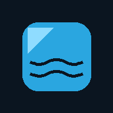

<!doctype html>
<html lang="en" data-theme="ice" data-mode="dark">
<head>
<meta charset="utf-8">
<meta name="viewport" content="width=device-width,initial-scale=1,viewport-fit=cover,user-scalable=no">
<meta name="theme-color" content="#0c1520" id="themecolor">
<meta name="mobile-web-app-capable" content="yes">
<meta name="apple-mobile-web-app-capable" content="yes">
<title>Ice Bath Log</title>
<link rel="manifest" href="manifest.webmanifest">
<link rel="icon" href="icons/icon-192.png">
<link rel="apple-touch-icon" href="icons/apple-touch-icon.png">
<link rel="stylesheet" href="lib/leaflet.css">
<script src="lib/leaflet.js"></script>
<style>
:root{--acc:#2aa6e0;--acc2:#5ad1ff;--onacc:#03202f;--red:#ff4d5e;--ok:#3fcf94;--over:#ffb454;--r:18px}
[data-theme=forest]{--acc:#2fa36b;--acc2:#5fd39a;--onacc:#03251a}
[data-theme=sunset]{--acc:#f08a3c;--acc2:#ffb26b;--onacc:#2b1503}
[data-theme=violet]{--acc:#8b6cf0;--acc2:#b3a0ff;--onacc:#150a3a}
[data-theme=rose]{--acc:#e0587a;--acc2:#ff8fa8;--onacc:#3a0a17}
[data-mode=dark]{--bg:#0c1520;--bg2:#13222f;--card:#17293a;--card2:#21394d;--ink:#eaf3fa;--mute:#93aec3;--line:#2a475f;--field:#0f1e2b;--warnbg:#3a2a10;--goodbg:#0f3a2c;color-scheme:dark}
[data-mode=light]{--bg:#eef3f7;--bg2:#e3ecf2;--card:#fff;--card2:#e8eff5;--ink:#0f2230;--mute:#587186;--line:#cfdce6;--field:#f6f9fb;--warnbg:#fff1d6;--goodbg:#dcf5ea;--acc2:var(--acc);color-scheme:light}
*{box-sizing:border-box;-webkit-tap-highlight-color:transparent}
html,body{margin:0;height:100%;background:var(--bg);color:var(--ink);font:16px/1.4 system-ui,-apple-system,"Segoe UI",Roboto,sans-serif}
body{overscroll-behavior:none}
h1{font-size:22px;margin:4px 0}h2{font-size:16px;margin:0 0 8px;color:var(--acc2)}p{margin:6px 0}
.sub{color:var(--mute);font-size:13px}
svg.ic{width:1.3em;height:1.3em;stroke:currentColor;fill:none;stroke-width:2;stroke-linecap:round;stroke-linejoin:round;vertical-align:-.25em}
#top{position:fixed;top:0;left:0;right:0;z-index:10;display:flex;align-items:center;gap:8px;padding:calc(8px + env(safe-area-inset-top)) 10px 8px;background:var(--bg2);border-bottom:1px solid var(--line)}
#top .t{flex:1;min-width:0}#top .t b{display:block;white-space:nowrap;overflow:hidden;text-overflow:ellipsis}#top .t span{font-size:11px;color:var(--mute)}
#top img.logo{width:34px;height:34px;border-radius:8px;object-fit:cover}
#main{max-width:560px;margin:0 auto;padding:calc(66px + env(safe-area-inset-top)) 14px 24px}
#main.hasbar{padding-bottom:110px}
#bar{position:fixed;left:0;right:0;bottom:0;z-index:10;display:none;gap:10px;padding:10px 12px calc(10px + env(safe-area-inset-bottom));background:var(--bg2);border-top:1px solid var(--line)}
#bar.show{display:flex}#bar button{flex:1}
.card{background:var(--card);border-radius:var(--r);padding:14px;margin:12px 0;box-shadow:0 1px 8px #0003}
.row{display:flex;gap:10px;align-items:center}.sp{justify-content:space-between}.wrap{flex-wrap:wrap}.end{justify-content:flex-end}
.big{font-size:60px;font-weight:700;line-height:1;font-variant-numeric:tabular-nums}.big small{font-size:24px;color:var(--mute);font-weight:500}
.chip{display:inline-block;padding:6px 12px;border-radius:99px;background:var(--card2);font-size:13px;border:1px solid transparent}
.chip.on{background:var(--acc);color:var(--onacc);border-color:var(--acc2)}.chip.mute{color:var(--mute)}
button,.btn{font:inherit;color:var(--ink);background:var(--card2);border:0;border-radius:14px;padding:12px 16px;cursor:pointer}
button:active{filter:brightness(1.2)}button:disabled{opacity:.5}
button.icon{padding:8px 10px;background:transparent;font-size:18px}
.pri{background:var(--acc);color:var(--onacc);font-weight:700}
.danger{background:var(--red);color:#fff;font-weight:700}
.ghost{background:transparent;border:1px solid var(--line)}
.wide{width:100%}.xl{font-size:20px;padding:18px}
input,select,textarea{font:inherit;color:var(--ink);background:var(--field);border:1px solid var(--line);border-radius:12px;padding:11px;width:100%}
input[type=checkbox]{width:auto}
label{display:block;font-size:13px;color:var(--mute);margin:12px 0 4px}label.row{color:var(--ink);font-size:15px}
.warn{background:var(--warnbg);border-left:4px solid var(--over);padding:8px 10px;border-radius:8px;margin:6px 0;font-size:14px}
.good{background:var(--goodbg);border-left:4px solid var(--ok);padding:8px 10px;border-radius:8px;margin:6px 0;font-size:14px}
.hours{display:flex;gap:8px;overflow:auto;padding-bottom:4px}.hr{min-width:58px;text-align:center;background:var(--card2);border-radius:12px;padding:8px 4px;font-size:13px}.hr b{display:block;font-size:16px}.hr.best{outline:2px solid var(--ok)}
table{width:100%;border-collapse:collapse;font-size:13px}th,td{padding:6px 4px;text-align:right;border-bottom:1px solid var(--line)}th:first-child,td:first-child{text-align:left}th{color:var(--mute);font-weight:500}
.grid{display:grid;grid-template-columns:1fr 1fr;gap:10px}.stat{background:var(--card2);border-radius:14px;padding:10px}.stat b{font-size:22px;display:block}
.hb{display:flex;flex-direction:column;align-items:center;gap:6px;padding:18px 8px;font-weight:600}.hb .ic{font-size:30px;color:var(--acc2)}
.dip{border-top:1px solid var(--line);padding:10px 0}.dip img{width:64px;height:64px;object-fit:cover;border-radius:10px}
pre{background:var(--field);border-radius:10px;padding:10px;font-size:11px;overflow:auto;max-height:220px;white-space:pre-wrap}
.seg{display:flex;background:var(--field);border-radius:12px;overflow:hidden;border:1px solid var(--line)}.seg button{flex:1;border-radius:0;background:none;padding:9px;font-size:14px}.seg button.on{background:var(--acc);color:var(--onacc);font-weight:600}
.mi{display:flex;align-items:center;gap:12px;width:100%;text-align:left;background:var(--card);margin:8px 0;padding:14px;border-radius:14px}.mi .ic{color:var(--acc2);font-size:22px}.mi span{flex:1}
.pcard{background:var(--card2);border-radius:14px;padding:10px;margin:8px 0}
.sw{width:44px;height:44px;border-radius:50%;border:3px solid transparent;padding:0}.sw.on{border-color:var(--ink)}
#spmap{height:280px;border-radius:14px;margin-top:10px;overflow:hidden;position:relative;isolation:isolate;background:var(--card2)}
.logo-lg{width:84px;height:84px;border-radius:18px;object-fit:cover;background:var(--card2)}
.pick{display:block;width:100%;text-align:left;margin:6px 0;background:var(--card2)}.pick.on{outline:2px solid var(--acc)}
.toast{position:fixed;left:50%;bottom:110px;transform:translateX(-50%);background:#000d;color:#fff;padding:10px 16px;border-radius:99px;z-index:60;font-size:14px;max-width:90%}
#dlg{position:fixed;inset:0;background:#0009;z-index:50;display:none;align-items:flex-end;justify-content:center}#dlg.show{display:flex}
.sheet{background:var(--bg2);width:100%;max-width:560px;border-radius:22px 22px 0 0;padding:16px 16px calc(16px + env(safe-area-inset-bottom));max-height:88vh;overflow:auto}
.sheet h2{font-size:18px;color:var(--ink)}.sb{margin:8px 0 14px}.sb ul{padding-left:18px;margin:4px 0}
#menu{position:fixed;top:calc(56px + env(safe-area-inset-top));right:10px;background:var(--bg2);border:1px solid var(--line);border-radius:14px;z-index:40;display:none;min-width:190px;box-shadow:0 8px 24px #0006;overflow:hidden}#menu.show{display:block}
#menu button{display:flex;gap:10px;align-items:center;width:100%;background:none;border-radius:0;text-align:left}
/* recording overlay */
#rec{--bg:#04182a;--bg2:#0a2a4a;--card:#102a43;--card2:#1d3d5c;--ink:#eaf6ff;--mute:#8fb0c9;--line:#2a475f;--field:#0a1f33;position:fixed;inset:0;background:var(--bg);color:var(--ink);z-index:30;display:none;flex-direction:column}
#rec.show{display:flex}#rec.prep{background:#0a2a4a}#rec.dip{background:#04182a}#rec.dip.over{background:#2a1a04}
.rb{flex:1;min-width:0;overflow-x:hidden;overflow-y:auto;padding:calc(14px + env(safe-area-inset-top)) 14px 14px;display:flex;flex-direction:column}
.feel{display:flex;gap:6px}.feel button{flex:1 1 0;min-width:0;padding:10px 0;font-size:24px;line-height:1.2}
.rf{padding:10px 12px calc(10px + env(safe-area-inset-bottom));display:flex;gap:10px;background:#0006}.rf button{flex:1}
.timer{font-size:min(30vw,26vh);font-weight:800;text-align:center;font-variant-numeric:tabular-nums;line-height:1;letter-spacing:-2px}
.over .timer{color:var(--over)}
.phase{text-align:center;font-size:22px;font-weight:700;color:var(--acc2);margin-top:6px}.over .phase{color:var(--over)}
.mid{flex:1;display:flex;flex-direction:column;justify-content:center;gap:14px}
.stopbtn{height:28vh;font-size:12vw;font-weight:800;margin:0 12px calc(12px + env(safe-area-inset-bottom));border-radius:22px}
.listen{text-align:center;color:var(--mute);font-size:14px;min-height:20px}
.step{display:flex;gap:8px;align-items:center}.step button{width:48px;padding:10px}.step b{flex:1;text-align:center;font-size:20px}
.wzdots{display:flex;gap:6px;justify-content:center;margin:6px 0 10px}.wzdots i{width:26px;height:5px;border-radius:3px;background:var(--card2)}.wzdots i.on{background:var(--acc)}
</style>
</head>
<body>
<div id="top"></div>
<div id="menu"></div>
<div id="main"></div>
<div id="bar"></div>
<div id="rec"></div>
<div id="dlg"></div>

<script>
'use strict';
const APP_NAME='Ice Bath Log';
const APP_VERSION='2.0';
/*CHANGELOG*/const CHANGELOG=[{"v":"2.0","date":"2026-11-08","notes":["Settings › Water temperature source: choose Automatic, lake model, measuring station, average of both, or typed by hand, with the current readings side by side.","Advanced conditions (button on Conditions): 48-hour water, air and wind curves, readings of all sources, whole-lake coldest/average/warmest, temperature by depth, sunrise, sunset, UV and rain.","Settings › Permissions & tests: allow and test microphone, voice recognition, sound, screen-on and camera. Offered once after first-time setup.","Measuring stations are now read through the data feed (the direct call was blocked by browsers).","Fixed: the dip wrap-up screen no longer jumps back to the top when you tap a feeling or Standing/Swimming.","Fixed: voice keyword now asks for microphone access first, so Chrome shows the permission prompt."]},{"v":"1.9","date":"2026-11-08","notes":["Water temperature now works for every lake of the Alplakes service, not only Lake Zurich: the hourly data job publishes all lakes and the app picks the ones near your swimming spot. Lakes outside the service can still be used with hand-entered temperatures."]},{"v":"1.8","date":"2026-11-08","notes":["Fixed: on the dip wrap-up screen the feeling icons no longer push the page out of the window."]},{"v":"1.7","date":"2026-11-08","notes":["Privacy: Test connection no longer contains a built-in example location; without a saved spot it tests the middle of Lake Zurich."]},{"v":"1.6","date":"2026-11-08","notes":["Water temperature fixed: phones may not read the lake service directly, so an hourly job in the GitHub repo now publishes the lake temperatures and the app reads them from there. Spots saved as \"lake not listed\" are linked to their lake again."]},{"v":"1.5","date":"2026-11-08","notes":["New app icon (lake at dawn). It is also shown in the top bar and in About when no club logo is set."]},{"v":"1.4","date":"2026-11-08","notes":["Settings › Test connection: calls every data source from your phone and shows the exact answer or error.","Settings › Install app on this phone."]},{"v":"1.3","date":"2026-11-08","notes":["Water temperature: the lake model is now linked reliably (the app uses the nearest model point and tells you how far it is); a spot saved without a lake is repaired automatically; measuring stations without temperature data are no longer used."]},{"v":"1.2","date":"2026-11-08","notes":["Swimming spot: a map with a draggable pin (or tap the map) to place your exact spot; weather and lake data follow the pin."]},{"v":"1.1","date":"2026-11-08","notes":["Top bar shows the app name with its version; burger menu stays at the top right."]},{"v":"1.0","date":"2026-11-08","notes":["First release: water and air temperature for your own swimming spot, daily dip suggestions, timed dips with a walk-to-water countdown and voice stop, standing or swimming per person, photos, statistics, optional shared Google Sheet.","First-time setup for club name, logo, city and lake, and members.","Themes, light/dark mode, icon style, backups, license and changelog in Settings. Update pop-up when a new version is available."]}];/*END*/
const ICONS=/*ICONS*/{"home": "<path d=\"M5 12l-2 0l9 -9l9 9l-2 0\" /> <path d=\"M5 12v7a2 2 0 0 0 2 2h10a2 2 0 0 0 2 -2v-7\" /> <path d=\"M9 21v-6a2 2 0 0 1 2 -2h2a2 2 0 0 1 2 2v6\" />", "snowflake": "<path d=\"M10 4l2 1l2 -1\" /> <path d=\"M12 2v6.5l3 1.72\" /> <path d=\"M17.928 6.268l.134 2.232l1.866 1.232\" /> <path d=\"M20.66 7l-5.629 3.25l.01 3.458\" /> <path d=\"M19.928 14.268l-1.866 1.232l-.134 2.232\" /> <path d=\"M20.66 17l-5.629 -3.25l-2.99 1.738\" /> <path d=\"M14 20l-2 -1l-2 1\" /> <path d=\"M12 22v-6.5l-3 -1.72\" /> <path d=\"M6.072 17.732l-.134 -2.232l-1.866 -1.232\" /> <path d=\"M3.34 17l5.629 -3.25l-.01 -3.458\" /> <path d=\"M4.072 9.732l1.866 -1.232l.134 -2.232\" /> <path d=\"M3.34 7l5.629 3.25l2.99 -1.738\" />", "chart-bar": "<path d=\"M3 13a1 1 0 0 1 1 -1h4a1 1 0 0 1 1 1v6a1 1 0 0 1 -1 1h-4a1 1 0 0 1 -1 -1l0 -6\" /> <path d=\"M15 9a1 1 0 0 1 1 -1h4a1 1 0 0 1 1 1v10a1 1 0 0 1 -1 1h-4a1 1 0 0 1 -1 -1l0 -10\" /> <path d=\"M9 5a1 1 0 0 1 1 -1h4a1 1 0 0 1 1 1v14a1 1 0 0 1 -1 1h-4a1 1 0 0 1 -1 -1l0 -14\" /> <path d=\"M4 20h14\" />", "history": "<path d=\"M12 8l0 4l2 2\" /> <path d=\"M3.05 11a9 9 0 1 1 .5 4m-.5 5v-5h5\" />", "settings": "<path d=\"M10.325 4.317c.426 -1.756 2.924 -1.756 3.35 0a1.724 1.724 0 0 0 2.573 1.066c1.543 -.94 3.31 .826 2.37 2.37a1.724 1.724 0 0 0 1.065 2.572c1.756 .426 1.756 2.924 0 3.35a1.724 1.724 0 0 0 -1.066 2.573c.94 1.543 -.826 3.31 -2.37 2.37a1.724 1.724 0 0 0 -2.572 1.065c-.426 1.756 -2.924 1.756 -3.35 0a1.724 1.724 0 0 0 -2.573 -1.066c-1.543 .94 -3.31 -.826 -2.37 -2.37a1.724 1.724 0 0 0 -1.065 -2.572c-1.756 -.426 -1.756 -2.924 0 -3.35a1.724 1.724 0 0 0 1.066 -2.573c-.94 -1.543 .826 -3.31 2.37 -2.37c1 .608 2.296 .07 2.572 -1.065\" /> <path d=\"M9 12a3 3 0 1 0 6 0a3 3 0 0 0 -6 0\" />", "menu-2": "<path d=\"M4 6l16 0\" /> <path d=\"M4 12l16 0\" /> <path d=\"M4 18l16 0\" />", "x": "<path d=\"M18 6l-12 12\" /> <path d=\"M6 6l12 12\" />", "arrow-left": "<path d=\"M5 12l14 0\" /> <path d=\"M5 12l6 6\" /> <path d=\"M5 12l6 -6\" />", "check": "<path d=\"M5 12l5 5l10 -10\" />", "plus": "<path d=\"M12 5l0 14\" /> <path d=\"M5 12l14 0\" />", "trash": "<path d=\"M4 7l16 0\" /> <path d=\"M10 11l0 6\" /> <path d=\"M14 11l0 6\" /> <path d=\"M5 7l1 12a2 2 0 0 0 2 2h8a2 2 0 0 0 2 -2l1 -12\" /> <path d=\"M9 7v-3a1 1 0 0 1 1 -1h4a1 1 0 0 1 1 1v3\" />", "refresh": "<path d=\"M20 11a8.1 8.1 0 0 0 -15.5 -2m-.5 -4v4h4\" /> <path d=\"M4 13a8.1 8.1 0 0 0 15.5 2m.5 4v-4h-4\" />", "users": "<path d=\"M5 7a4 4 0 1 0 8 0a4 4 0 1 0 -8 0\" /> <path d=\"M3 21v-2a4 4 0 0 1 4 -4h4a4 4 0 0 1 4 4v2\" /> <path d=\"M16 3.13a4 4 0 0 1 0 7.75\" /> <path d=\"M21 21v-2a4 4 0 0 0 -3 -3.85\" />", "palette": "<path d=\"M12 21a9 9 0 0 1 0 -18c4.97 0 9 3.582 9 8c0 1.06 -.474 2.078 -1.318 2.828c-.844 .75 -1.989 1.172 -3.182 1.172h-2.5a2 2 0 0 0 -1 3.75a1.3 1.3 0 0 1 -1 2.25\" /> <path d=\"M7.5 10.5a1 1 0 1 0 2 0a1 1 0 1 0 -2 0\" /> <path d=\"M11.5 7.5a1 1 0 1 0 2 0a1 1 0 1 0 -2 0\" /> <path d=\"M15.5 10.5a1 1 0 1 0 2 0a1 1 0 1 0 -2 0\" />", "cloud-upload": "<path d=\"M7 18a4.6 4.4 0 0 1 0 -9a5 4.5 0 0 1 11 2h1a3.5 3.5 0 0 1 0 7h-1\" /> <path d=\"M9 15l3 -3l3 3\" /> <path d=\"M12 12l0 9\" />", "photo": "<path d=\"M15 8h.01\" /> <path d=\"M3 6a3 3 0 0 1 3 -3h12a3 3 0 0 1 3 3v12a3 3 0 0 1 -3 3h-12a3 3 0 0 1 -3 -3v-12\" /> <path d=\"M3 16l5 -5c.928 -.893 2.072 -.893 3 0l5 5\" /> <path d=\"M14 14l1 -1c.928 -.893 2.072 -.893 3 0l3 3\" />", "camera": "<path d=\"M5 7h1a2 2 0 0 0 2 -2a1 1 0 0 1 1 -1h6a1 1 0 0 1 1 1a2 2 0 0 0 2 2h1a2 2 0 0 1 2 2v9a2 2 0 0 1 -2 2h-14a2 2 0 0 1 -2 -2v-9a2 2 0 0 1 2 -2\" /> <path d=\"M9 13a3 3 0 1 0 6 0a3 3 0 0 0 -6 0\" />", "microphone": "<path d=\"M9 5a3 3 0 0 1 3 -3a3 3 0 0 1 3 3v5a3 3 0 0 1 -3 3a3 3 0 0 1 -3 -3l0 -5\" /> <path d=\"M5 10a7 7 0 0 0 14 0\" /> <path d=\"M8 21l8 0\" /> <path d=\"M12 17l0 4\" />", "info-circle": "<path d=\"M3 12a9 9 0 1 0 18 0a9 9 0 0 0 -18 0\" /> <path d=\"M12 9h.01\" /> <path d=\"M11 12h1v4h1\" />", "file-text": "<path d=\"M14 3v4a1 1 0 0 0 1 1h4\" /> <path d=\"M17 21h-10a2 2 0 0 1 -2 -2v-14a2 2 0 0 1 2 -2h7l5 5v11a2 2 0 0 1 -2 2\" /> <path d=\"M9 9l1 0\" /> <path d=\"M9 13l6 0\" /> <path d=\"M9 17l6 0\" />", "list-details": "<path d=\"M13 5h8\" /> <path d=\"M13 9h5\" /> <path d=\"M13 15h8\" /> <path d=\"M13 19h5\" /> <path d=\"M3 5a1 1 0 0 1 1 -1h4a1 1 0 0 1 1 1v4a1 1 0 0 1 -1 1h-4a1 1 0 0 1 -1 -1l0 -4\" /> <path d=\"M3 15a1 1 0 0 1 1 -1h4a1 1 0 0 1 1 1v4a1 1 0 0 1 -1 1h-4a1 1 0 0 1 -1 -1l0 -4\" />", "device-floppy": "<path d=\"M6 4h10l4 4v10a2 2 0 0 1 -2 2h-12a2 2 0 0 1 -2 -2v-12a2 2 0 0 1 2 -2\" /> <path d=\"M10 14a2 2 0 1 0 4 0a2 2 0 1 0 -4 0\" /> <path d=\"M14 4l0 4l-6 0l0 -4\" />", "download": "<path d=\"M4 17v2a2 2 0 0 0 2 2h12a2 2 0 0 0 2 -2v-2\" /> <path d=\"M7 11l5 5l5 -5\" /> <path d=\"M12 4l0 12\" />", "upload": "<path d=\"M4 17v2a2 2 0 0 0 2 2h12a2 2 0 0 0 2 -2v-2\" /> <path d=\"M7 9l5 -5l5 5\" /> <path d=\"M12 4l0 12\" />", "thermometer": "<path d=\"M19 5a2.828 2.828 0 0 1 0 4l-8 8h-4v-4l8 -8a2.828 2.828 0 0 1 4 0\" /> <path d=\"M16 7l-1.5 -1.5\" /> <path d=\"M13 10l-1.5 -1.5\" /> <path d=\"M10 13l-1.5 -1.5\" /> <path d=\"M7 17l-3 3\" />", "wind": "<path d=\"M5 8h8.5a2.5 2.5 0 1 0 -2.34 -3.24\" /> <path d=\"M3 12h15.5a2.5 2.5 0 1 1 -2.34 3.24\" /> <path d=\"M4 16h5.5a2.5 2.5 0 1 1 -2.34 3.24\" />", "map-pin": "<path d=\"M9 11a3 3 0 1 0 6 0a3 3 0 0 0 -6 0\" /> <path d=\"M17.657 16.657l-4.243 4.243a2 2 0 0 1 -2.827 0l-4.244 -4.243a8 8 0 1 1 11.314 0\" />", "search": "<path d=\"M3 10a7 7 0 1 0 14 0a7 7 0 1 0 -14 0\" /> <path d=\"M21 21l-6 -6\" />", "user": "<path d=\"M8 7a4 4 0 1 0 8 0a4 4 0 0 0 -8 0\" /> <path d=\"M6 21v-2a4 4 0 0 1 4 -4h4a4 4 0 0 1 4 4v2\" />", "flame": "<path d=\"M12 10.941c2.333 -3.308 .167 -7.823 -1 -8.941c0 3.395 -2.235 5.299 -3.667 6.706c-1.43 1.408 -2.333 3.294 -2.333 5.588c0 3.704 3.134 6.706 7 6.706c3.866 0 7 -3.002 7 -6.706c0 -1.712 -1.232 -4.403 -2.333 -5.588c-2.084 3.353 -3.257 3.353 -4.667 2.235\" />", "scale": "<path d=\"M7 20l10 0\" /> <path d=\"M6 6l6 -1l6 1\" /> <path d=\"M12 3l0 17\" /> <path d=\"M9 12l-3 -6l-3 6a3 3 0 0 0 6 0\" /> <path d=\"M21 12l-3 -6l-3 6a3 3 0 0 0 6 0\" />", "world": "<path d=\"M3 12a9 9 0 1 0 18 0a9 9 0 0 0 -18 0\" /> <path d=\"M3.6 9h16.8\" /> <path d=\"M3.6 15h16.8\" /> <path d=\"M11.5 3a17 17 0 0 0 0 18\" /> <path d=\"M12.5 3a17 17 0 0 1 0 18\" />", "help-circle": "<path d=\"M3 12a9 9 0 1 0 18 0a9 9 0 0 0 -18 0\" /> <path d=\"M12 16v.01\" /> <path d=\"M12 13a2 2 0 0 0 .914 -3.782a1.98 1.98 0 0 0 -2.414 .483\" />"}/*ENDICONS*/;
const EMO={home:'🏠',snowflake:'❄️','chart-bar':'📊',history:'🕘',settings:'⚙️','menu-2':'☰',x:'✕','arrow-left':'←',check:'✓',plus:'＋',trash:'🗑',refresh:'⟳',users:'👥',palette:'🎨','cloud-upload':'☁️',photo:'🖼️',camera:'📷',microphone:'🎙️','info-circle':'ℹ️','file-text':'📄','list-details':'📋','device-floppy':'💾',download:'⬇️',upload:'⬆️',thermometer:'🌡️',wind:'💨','map-pin':'📍',search:'🔍',user:'👤',flame:'🔥',scale:'⚖️',world:'🌍','help-circle':'❓'};

/* ====== helpers ====== */
const $=(s,r=document)=>r.querySelector(s);
const esc=s=>String(s??'').replace(/[&<>"']/g,c=>({'&':'&amp;','<':'&lt;','>':'&gt;','"':'&quot;',"'":'&#39;'}[c]));
const pad=n=>String(n).padStart(2,'0');
const fmt=s=>{s=Math.max(0,Math.round(s));return pad(Math.floor(s/60))+':'+pad(s%60)};
const uid=()=>Date.now().toString(36)+Math.random().toString(36).slice(2,6);
const num=v=>{v=parseFloat(String(v).replace(',','.'));return isFinite(v)?v:null};
const parseMS=t=>{t=String(t||'').trim();if(!t)return null;if(t.includes(':')){const[a,b]=t.split(':');return (+a||0)*60+(+b||0)}const n=num(t);return n==null?null:Math.round(n*60)};
function toast(m,ms=2600){const d=document.createElement('div');d.className='toast';d.textContent=m;document.body.appendChild(d);setTimeout(()=>d.remove(),ms)}
const fmtDate=ts=>new Date(ts).toLocaleDateString('en-GB',{day:'2-digit',month:'short',year:'2-digit'});
const fmtTime=ts=>new Date(ts).toLocaleTimeString('en-GB',{hour:'2-digit',minute:'2-digit'});
const ago=ts=>{const m=Math.round((Date.now()-ts)/60000);return m<2?'just now':m<90?m+' min ago':m<2880?Math.round(m/60)+' h ago':Math.round(m/1440)+' d ago'};
const cmpVer=(a,b)=>{const x=String(a).split('.').map(Number),y=String(b).split('.').map(Number);for(let i=0;i<3;i++){if((x[i]||0)!==(y[i]||0))return(x[i]||0)>(y[i]||0)?1:-1}return 0};
const km=(a,b,c,d)=>{const R=6371,t=x=>x*Math.PI/180,dl=t(c-a),dn=t(d-b),h=Math.sin(dl/2)**2+Math.cos(t(a))*Math.cos(t(c))*Math.sin(dn/2)**2;return 2*R*Math.asin(Math.sqrt(h))};
const dest=(la,ln,m,b)=>{const R=6371000,t=x=>x*Math.PI/180,d=m/R,B=t(b),p=t(la),l=t(ln);const p2=Math.asin(Math.sin(p)*Math.cos(d)+Math.cos(p)*Math.sin(d)*Math.cos(B));const l2=l+Math.atan2(Math.sin(B)*Math.sin(d)*Math.cos(p),Math.cos(d)-Math.sin(p)*Math.sin(p2));return[p2*180/Math.PI,l2*180/Math.PI]};
function ic(n,cls=''){if(S.settings.iconStyle==='emoji')return `<span class="ic ${cls}" style="font-style:normal">${EMO[n]||'•'}</span>`;return `<svg class="ic ${cls}" viewBox="0 0 24 24" aria-hidden="true">${ICONS[n]||''}</svg>`}

/* ====== state ====== */
const LS='ice-bath-log-v1', ACTIVE='ice-bath-log-active';
const DEF={club:{name:'',logo:''},spot:null,setupDone:false,lastSeen:'',theme:'ice',mode:'auto',waterSource:'auto',iconStyle:'icons',prepSec:60,targetMode:'auto',targetSec:180,keywords:'stop, out, done',lang:'en-US',voice:true,beep:true,sheetUrl:'',lastSync:0,me:'',lastStyle:{}};
let S=(()=>{try{const j=JSON.parse(localStorage.getItem(LS)||'{}');const st=Object.assign({},DEF,j.settings);st.club=Object.assign({},DEF.club,(j.settings||{}).club);return{members:j.members||[],dips:j.dips||[],club:j.club||[],cache:j.cache||{},manual:j.manual||null,settings:st}}catch{return{members:[],dips:[],club:[],cache:{},manual:null,settings:{...DEF}}}})();
const save=()=>{try{localStorage.setItem(LS,JSON.stringify(S))}catch(e){toast('Storage full – export a backup!')}};
const clubName=()=>S.settings.club.name||'My club';

/* photos in IndexedDB */
const idb=()=>new Promise((res,rej)=>{const r=indexedDB.open('ice-bath-log-photos',1);r.onupgradeneeded=()=>r.result.createObjectStore('p');r.onsuccess=()=>res(r.result);r.onerror=()=>rej(r.error)});
async function photoPut(id,blob){const db=await idb();return new Promise((res,rej)=>{const t=db.transaction('p','readwrite');t.objectStore('p').put(blob,id);t.oncomplete=res;t.onerror=()=>rej(t.error)})}
async function photoGet(id){const db=await idb();return new Promise(res=>{const q=db.transaction('p').objectStore('p').get(id);q.onsuccess=()=>res(q.result||null);q.onerror=()=>res(null)})}
async function photoDel(id){const db=await idb();return new Promise(res=>{const t=db.transaction('p','readwrite');t.objectStore('p').delete(id);t.oncomplete=res})}
function shrink(file,max=1000,type='image/jpeg',q=.72){return new Promise((res,rej)=>{const img=new Image();img.onload=()=>{const k=Math.min(1,max/Math.max(img.width,img.height));const c=document.createElement('canvas');c.width=Math.round(img.width*k);c.height=Math.round(img.height*k);c.getContext('2d').drawImage(img,0,0,c.width,c.height);c.toBlob(b=>b?res(b):rej(),type,q);URL.revokeObjectURL(img.src)};img.onerror=rej;img.src=URL.createObjectURL(file)})}
const blobToUrl=b=>new Promise(r=>{const f=new FileReader();f.onload=()=>r(f.result);f.readAsDataURL(b)});

/* ====== appearance ====== */
function applyTheme(){
  const s=S.settings,dark=matchMedia('(prefers-color-scheme: dark)').matches,mode=s.mode==='auto'?(dark?'dark':'light'):s.mode;
  document.documentElement.dataset.theme=s.theme;document.documentElement.dataset.mode=mode;
  $('#themecolor').content=getComputedStyle(document.documentElement).getPropertyValue('--bg2').trim()||'#0c1520';
}
matchMedia('(prefers-color-scheme: dark)').addEventListener('change',()=>{if(S.settings.mode==='auto')applyTheme()});

/* ====== dialogs ====== */
function dlg({title,body,actions,close=true}){return new Promise(res=>{const o=$('#dlg');
  o.innerHTML=`<div class="sheet"><div class="row sp"><h2>${title}</h2>${close?`<button class="icon" data-dx aria-label="Close">${ic('x')}</button>`:''}</div><div class="sb">${body}</div><div class="row end wrap">${actions.map((a,i)=>`<button class="${a.cls||''}" data-di="${i}">${a.label}</button>`).join('')}</div></div>`;
  o.className='show';const done=v=>{o.className='';o.innerHTML='';o.onclick=null;res(v)};
  o.onclick=e=>{const b=e.target.closest('[data-di]');if(b)done(actions[+b.dataset.di].v);else if(close&&(e.target.closest('[data-dx]')||e.target===o))done(null)}})}
const confirmD=(title,msg,yes='OK',no='Cancel',danger=false)=>dlg({title,body:`<p>${msg}</p>`,actions:[{label:no,v:false,cls:'ghost'},{label:yes,v:true,cls:danger?'danger':'pri'}]}).then(v=>v===true);
const infoD=(title,body)=>dlg({title,body,actions:[{label:'OK',v:1,cls:'pri'}]});

/* ====== places & lakes ====== */
let LAKES=[
 {name:'Lake Zurich',keys:['zurich'],model:'delft3d-flow',lat:47.27,lng:8.69},
 {name:'Lake Geneva',keys:['geneva'],model:'delft3d-flow',lat:46.45,lng:6.55},
 {name:'Lake Lugano',keys:['lugano'],model:'delft3d-flow',lat:46.0,lng:8.97},
 {name:'Lake Biel',keys:['biel'],model:'delft3d-flow',lat:47.08,lng:7.17},
 {name:'Lake Murten',keys:['murten'],model:'delft3d-flow',lat:46.93,lng:7.08},
 {name:'Lake Neuchâtel',keys:['neuchatel'],model:'mitgcm',lat:46.9,lng:6.85},
 {name:'Lake Lucerne',keys:['lucerne'],model:'mitgcm',lat:47.0,lng:8.38},
 {name:'Lake Zug',keys:['zug'],model:'mitgcm',lat:47.13,lng:8.48},
 {name:'Lake Greifensee',keys:['greifensee'],model:'delft3d-flow',lat:47.35,lng:8.68},
 {name:'Lake Hallwil',keys:['hallwil'],model:'delft3d-flow',lat:47.28,lng:8.22},
 {name:'Lake Ägeri',keys:['aegeri','ageri'],model:'delft3d-flow',lat:47.12,lng:8.63},
 {name:'Lake Joux',keys:['joux'],model:'delft3d-flow',lat:46.65,lng:6.28},
 {name:'Lake St. Moritz',keys:['stmoritz'],model:'delft3d-flow',lat:46.49,lng:9.83},
 {name:'Lake Garda',keys:['garda'],model:'delft3d-flow',lat:45.65,lng:10.7},
 {name:'Lake Caldonazzo',keys:['caldonazzo'],model:'delft3d-flow',lat:46.01,lng:11.24},
 {name:'Lake Annecy',keys:['annecy'],model:'delft3d-flow',lat:45.86,lng:6.17},
 {name:'Lake Bourget',keys:['bourget'],model:'delft3d-flow',lat:45.73,lng:5.86}];
/* distance (km) from a point to a lake: 0 inside its bounding box (when the data feed supplied one) */
function dl(l,lat,lng){if(l.bbox){const la=Math.min(Math.max(lat,l.bbox[0]),l.bbox[2]),ln=Math.min(Math.max(lng,l.bbox[1]),l.bbox[3]);return km(lat,lng,la,ln)}return km(lat,lng,l.lat,l.lng)}
function parseAlp(j){
  const raw=j.variables.temperature.data.map(x=>Array.isArray(x)?x.flat(Infinity)[0]:x);
  const ts=j.time.map(t=>+new Date(/Z|[+-]\d\d:?\d\d$/.test(t)?t:t+'Z'));
  return ts.map((t,i)=>({t,v:raw[i]})).filter(p=>typeof p.v==='number'&&isFinite(p.v));
}
/* Browsers may not read the Alplakes API (no CORS). An hourly GitHub job publishes
   whole-lake surface grids to the repo's "data" branch; raw.githubusercontent.com allows browser reads. */
const RELAY_BASE=(()=>{const m=location.hostname.match(/^([^.]+)\.github\.io$/),repo=location.pathname.split('/').filter(Boolean)[0];
  return `https://raw.githubusercontent.com/${m?m[1]:'dusiaclaw'}/${m&&repo?repo:'ice-bath-log'}/data/`})();
const RELAY_URL=RELAY_BASE+'index.json';
let relayErr='',relayIdx=null,relayIdxAt=0;const relayLakes={};
async function relayJson(path){const r=await fetch(RELAY_BASE+path+'?t='+Math.floor(Date.now()/3e5),{cache:'no-store'});if(!r.ok)throw new Error(path+': HTTP '+r.status);return r.json()}
async function getIndex(){
  if(relayIdx&&Date.now()-relayIdxAt<15*60e3)return relayIdx;
  try{relayIdx=await relayJson('index.json');relayIdxAt=Date.now();relayErr=''}catch(e){relayErr=e.message||'network error'}
  return relayIdx;
}
/* lake list = lakes of the data feed (all lakes of the Alplakes service) + built-in fallback */
async function loadLakes(){
  const ix=await getIndex();if(!ix||!ix.lakes)return;
  const feed=ix.lakes.map(l=>({name:l.name,keys:[l.key],model:l.model,lat:l.lat,lng:l.lng,bbox:l.bbox}));
  const have=new Set(feed.map(l=>l.keys[0]));
  LAKES=feed.concat(LAKES.filter(l=>!l.keys.some(k=>have.has(k))));
}
async function getRelayLake(key){
  const c=relayLakes[key];if(c&&Date.now()-c.at<15*60e3)return c.d;
  try{const d=await relayJson('lakes/'+key+'.json');relayLakes[key]={d,at:Date.now()};relayErr='';return d}
  catch(e){relayErr=e.message||'network error';return null}
}
async function relayPoint(lakeKeys,lat,lng){
  const ix=await getIndex();if(!ix||!ix.lakes)return null;
  const ent=ix.lakes.find(l=>lakeKeys.includes(l.key));if(!ent)return{missing:true};
  const L=await getRelayLake(ent.key);if(!L)return null;
  let bi=-1,bd=1e9;
  for(let i=0;i<L.lat.length;i++){const dd=km(lat,lng,L.lat[i],L.lng[i]);if(dd<bd){bd=dd;bi=i}}
  if(bi<0)return null;
  const series=L.times.map((t,k)=>({t,v:L.t[k][bi]})).filter(p=>typeof p.v==='number');
  return{key:ent.key,series,dist:bd*1000,gl:L.lat[bi],gn:L.lng[bi],updated:L.updated};
}
let lastAlpErr='';
async function alpPoint(lake,lat,lng,a,b){
  for(const key of lake.keys){
    for(const q of ['?variables=temperature','']){
      try{const r=await fetch(`https://alplakes-api.eawag.ch/simulations/point/${lake.model}/${key}/${a}/${b}/0/${lat.toFixed(5)}/${lng.toFixed(5)}${q}`);
        if(!r.ok){lastAlpErr='HTTP '+r.status;continue}
        const j=await r.json(),s=parseAlp(j);
        if(s.length){lastAlpErr='';return{series:s,key,dist:j.distance&&j.distance.data!=null?+j.distance.data:0,gl:j.lat,gn:j.lng}}
        lastAlpErr='empty answer'}catch(e){lastAlpErr=e.message||'network error'}
    }
  }
  return null;
}
const tfmt=d=>d.toISOString().slice(0,16).replace(/[-:T]/g,'');
// The API always answers with the nearest model grid point and says how far away it is (distance.data, metres).
async function findLakePoint(city,lake){
  const rp=await relayPoint(lake.keys,city.lat,city.lng);
  if(rp&&!rp.missing&&rp.series.length){return rp.dist<=3000?{pt:[rp.gl,rp.gn],key:rp.key,dist:rp.dist/1000}:{far:rp.dist/1000}}
  if(rp&&rp.missing)lastAlpErr=`${lake.name} is not in the app's data feed`;
  const now=Date.now(),a=tfmt(new Date(now-36e5)),b=tfmt(new Date(now+36e5));
  const tries=[[city.lat,city.lng]];for(const f of [.1,.2,.35,.5,.75,1])tries.push([city.lat+(lake.lat-city.lat)*f,city.lng+(lake.lng-city.lng)*f]);
  let best=null;
  for(const [la,ln] of tries){const r=await alpPoint(lake,la,ln,a,b);if(!r)continue;if(!best||r.dist<best.dist)best=r;if(r.dist<=1500)break}
  if(best&&best.dist<=3000)return{pt:[best.gl,best.gn],key:best.key,dist:best.dist/1000};
  return best?{far:best.dist/1000}:null;
}
let stationsFeed=null,stationsAt=0;
async function getStations(){
  if(stationsFeed&&Date.now()-stationsAt<15*60e3)return stationsFeed;
  try{stationsFeed=await relayJson('stations.json');stationsAt=Date.now()}catch(e){relayErr=e.message||'network error'}
  return stationsFeed;
}
async function nearestStation(lat,lng){
  const d=await getStations();if(!d||!d.stations)return null;
  let best=null;for(const s of d.stations){const dd=km(lat,lng,s.lat,s.lng);if(dd<40&&(!best||dd<best.dist))best={id:s.id,name:s.name,dist:Math.round(dd),ok:true}}
  return best;
}
async function geocode(q){const r=await fetch(`https://geocoding-api.open-meteo.com/v1/search?name=${encodeURIComponent(q)}&count=6&language=en&format=json`);const j=await r.json();return(j.results||[]).map(x=>({name:x.name,region:x.admin1||'',country:x.country||'',lat:x.latitude,lng:x.longitude}))}

/* ====== data sources ====== */
async function fetchAlp(){
  const sp=S.settings.spot;if(!sp||!sp.lake||!sp.pt)throw new Error('no lake model set');
  const now=Date.now();let r=await relayPoint([sp.lake.key],sp.pt[0],sp.pt[1]);
  if(!r||r.missing||!r.series.length)r=await alpPoint({keys:[sp.lake.key],model:sp.lake.model},sp.pt[0],sp.pt[1],tfmt(new Date(now-6*36e5)),tfmt(new Date(now+48*36e5)));
  if(!r)throw new Error(relayErr?'data feed: '+relayErr:(lastAlpErr||'no model data'));
  let cur=r.series[0];for(const p of r.series)if(Math.abs(p.t-now)<Math.abs(cur.t-now))cur=p;
  return{v:+cur.v.toFixed(1),t:cur.t,series:r.series.filter(p=>p.t>now-36e5).slice(0,60)};
}
async function fetchBafu(){
  const sp=S.settings.spot,st=sp&&sp.station;if(!st)throw new Error('no station near your spot');
  const d=await getStations();if(!d||!d.stations)throw new Error('data feed: '+(relayErr||'unavailable'));
  const s=d.stations.find(x=>x.id===st.id);if(!s)throw new Error('station has no temperature now');
  return{v:s.v,t:s.t};
}
async function fetchWx(){
  const sp=S.settings.spot;if(!sp)throw new Error('no location set');
  const r=await fetch(`https://api.open-meteo.com/v1/forecast?latitude=${sp.lat}&longitude=${sp.lng}&current=temperature_2m,apparent_temperature,wind_speed_10m,weather_code,is_day&hourly=temperature_2m,apparent_temperature,precipitation_probability,weather_code,wind_speed_10m,wind_gusts_10m&daily=sunrise,sunset,uv_index_max,precipitation_probability_max&timezone=auto&forecast_days=2&wind_speed_unit=kmh`);
  if(!r.ok)throw new Error('HTTP '+r.status);const j=await r.json(),h=j.hourly;
  return{t:Date.now(),air:j.current.temperature_2m,feels:j.current.apparent_temperature,wind:j.current.wind_speed_10m,code:j.current.weather_code,day:j.current.is_day,
    hours:h.time.map((t,i)=>({t:+new Date(t),air:h.temperature_2m[i],feels:h.apparent_temperature[i],pop:h.precipitation_probability[i],code:h.weather_code[i],wind:h.wind_speed_10m[i],gust:h.wind_gusts_10m?h.wind_gusts_10m[i]:null})),
    daily:j.daily?j.daily.time.map((t,i)=>({date:t,sunrise:j.daily.sunrise[i],sunset:j.daily.sunset[i],uv:j.daily.uv_index_max[i],pop:j.daily.precipitation_probability_max[i]})):[]};
}
const wxIcon=c=>c==null?'·':c===0?'☀️':c<=2?'🌤️':c===3?'☁️':c<=48?'🌫️':c<=57?'🌦️':c<=67?'🌧️':c<=77?'🌨️':c<=82?'🌧️':c<=86?'🌨️':'⛈️';
let loading=false;
async function healSpot(){
  const sp=S.settings.spot;if(!sp)return;
  if(!sp.lake&&!sp.manualNone){const n=LAKES.map(l=>({l,d:dl(l,sp.lat,sp.lng)})).sort((a,b)=>a.d-b.d)[0];
    if(n&&n.d<30){const f=await findLakePoint({lat:sp.lat,lng:sp.lng},n.l);if(f&&f.pt){sp.lake={name:n.l.name,key:f.key,model:n.l.model};sp.pt=f.pt;sp.dist=f.dist;save()}}}
  if(!sp.station||!sp.station.ok){sp.station=await nearestStation(sp.lat,sp.lng);save()}
}
async function refreshData(){
  if(loading||!S.settings.spot)return;loading=true;render();
  try{await healSpot()}catch{}
  const [a,b,w]=await Promise.allSettled([fetchAlp(),fetchBafu(),fetchWx()]);
  const c=S.cache;c.errors={};
  if(a.status==='fulfilled')c.alp=a.value;else{c.errors.alp=a.reason.message;delete c.alp}
  if(b.status==='fulfilled')c.bafu=b.value;else{c.errors.bafu=b.reason.message;delete c.bafu}
  if(w.status==='fulfilled')c.wx=w.value;else c.errors.wx=w.reason.message;
  c.fetched=Date.now();save();loading=false;render();
}
const WSRC=[['auto','Automatic','Lake model first, then a nearby measuring station'],['model','Lake model only','Alplakes simulation for your spot'],['station','Measuring station only','Nearest BAFU lake station with a temperature'],['avg','Average of both','Mean of lake model and station when both exist'],['manual','Typed by hand only','Only the value you enter on Conditions']];
function waterReadings(){const {alp,bafu}=S.cache,m=S.manual;return{model:alp?{v:alp.v,t:alp.t}:null,station:bafu?{v:bafu.v,t:bafu.t}:null,manual:m?{v:m.v,t:m.t}:null}}
function waterNow(){
  const mode=S.settings.waterSource||'auto',m=S.manual,{model:A,station:B}=waterReadings();
  const man=m&&(mode==='manual'||Date.now()-m.t<6*36e5)?{v:m.v,src:'Your measurement',t:m.t}:null;
  if(mode==='manual')return man;
  if(man)return man;
  const a=A&&{v:A.v,src:'Lake model',t:A.t},b=B&&{v:B.v,src:'Measuring station',t:B.t};
  if(mode==='model')return a||null;
  if(mode==='station')return b||null;
  if(mode==='avg')return a&&b?{v:+((a.v+b.v)/2).toFixed(1),src:'Average of lake model and station',t:Math.min(a.t,b.t)}:(a||b||null);
  return a||b||null;
}

/* ====== suggestions ====== */
const recommendSec=w=>w==null?120:Math.round(Math.min(Math.max(w,1),10))*60;
function suggestion(){
  const w=waterNow(),wx=S.cache.wx,out=[];
  if(!w)return{lines:[{c:'warn',t:'No water temperature yet – refresh, or enter what you measure at the shore.'}],sec:120};
  const sec=recommendSec(w.v),min=sec/60,lvl=w.v<4?'Extreme cold':w.v<7?'Very cold':w.v<10?'Cold':w.v<14?'Fresh':'Mild';
  out.push({c:'good',t:`<b>${lvl} (${w.v.toFixed(1)}°C)</b> – aim for up to <b>${min} min</b> (rule of thumb: ~1 min per °C, max 10). `+(w.v<7?'Stay standing or swim only briefly; keep hands and head out if you can.':w.v<12?'Short swims are fine if you are acclimatised.':'Good conditions for a longer, relaxed dip.')});
  if(wx){
    if(wx.feels<3)out.push({c:'warn',t:`Feels like ${wx.feels.toFixed(0)}°C on shore – bring warm dry layers, a hat and a hot drink; get dressed fast.`});
    if(wx.wind>20)out.push({c:'warn',t:`Wind ${Math.round(wx.wind)} km/h – wind chill after you get out will hurt; shorten the dip.`});
    if(wx.code>=95)out.push({c:'warn',t:'Thunderstorm risk – stay out of the water.'});
    else if(wx.code>=51&&wx.code<=82)out.push({c:'warn',t:'Rain/snow around – plan a sheltered place to change.'});
    if(!wx.day)out.push({c:'warn',t:'It is dark – use a headlamp, bring a buddy, stay close to the shore.'});
    const b=bestHour();if(b)out.push({c:'good',t:`Best slot ${b.today?'today':'tomorrow'}: <b>${pad(new Date(b.t).getHours())}:00</b> – feels like ${b.feels.toFixed(0)}°C, ${wxIcon(b.code)} ${b.pop??0}% rain chance.`});
  }
  out.push({c:'warn',t:'Never dip alone. Leave the water if you shiver uncontrollably or lose feeling in hands. Rewarm gradually (no hot shower right away). Not medical advice.'});
  return{lines:out,sec};
}
function bestHour(){
  const h=S.cache.wx?.hours;if(!h)return null;const now=Date.now(),d=new Date();
  const ok=x=>{const hr=new Date(x.t).getHours();return hr>=8&&hr<=17&&x.code<95&&(x.pop??0)<60};
  let c=h.filter(x=>x.t>now-36e5&&new Date(x.t).getDate()===d.getDate()&&ok(x)),today=true;
  if(!c.length){c=h.filter(x=>x.t>now&&ok(x));today=false}
  if(!c.length)return null;c.sort((a,b)=>b.feels-a.feels);return{...c[0],today};
}

/* ====== rows / stats ====== */
function localRows(){const r=[];for(const d of S.dips)for(const p of d.people)r.push({key:d.id+'|'+p.name,dipId:d.id,ts:d.ts,name:p.name,sec:p.sec||d.durationSec,style:p.style,water:d.water,air:d.air,feeling:d.feeling});return r}
function allRows(scope){const m=new Map();if(scope==='club')for(const c of S.club)m.set(String(c.key),{key:String(c.key),dipId:String(c.dipId),ts:+c.timestamp,name:String(c.name),sec:+c.seconds,style:c.style,water:c.waterC===''?null:+c.waterC,air:c.airC===''?null:+c.airC,feeling:c.feeling});for(const r of localRows())m.set(r.key,r);return[...m.values()].sort((a,b)=>a.ts-b.ts)}
let statScope='mine';
function statsHtml(){
  const rows=statScope==='club'?allRows('club'):localRows().sort((a,b)=>a.ts-b.ts);
  const dips=[...new Set(rows.map(r=>r.dipId))].map(id=>{const rs=rows.filter(r=>r.dipId===id);return{id,ts:rs[0].ts,sec:Math.max(...rs.map(r=>r.sec)),water:rs[0].water}});
  const tot=rows.reduce((a,r)=>a+r.sec,0),ws=dips.filter(d=>d.water!=null);
  const cold=ws.length?Math.min(...ws.map(d=>d.water)):null,avg=ws.length?ws.reduce((a,d)=>a+d.water,0)/ws.length:null;
  const per=[...new Set(rows.map(r=>r.name))].map(n=>{const rs=rows.filter(r=>r.name===n),cw=rs.filter(r=>r.water!=null);return{n,c:rs.length,tot:rs.reduce((a,r)=>a+r.sec,0),max:Math.max(...rs.map(r=>r.sec)),cold:cw.length?Math.min(...cw.map(r=>r.water)):null,sw:rs.filter(r=>r.style==='swimming').length}}).sort((a,b)=>b.tot-a.tot);
  return `<div class="seg" style="margin:8px 0"><button class="${statScope==='mine'?'on':''}" data-a="scope" data-v="mine">This phone</button><button class="${statScope==='club'?'on':''}" data-a="scope" data-v="club">Whole club (Sheet)</button></div>
  ${statScope==='club'&&!S.settings.sheetUrl?'<div class="warn">Set up the shared Google Sheet in Settings › Shared Sheet to see everyone’s dips.</div>':''}
  ${!rows.length?'<div class="card sub">No dips recorded yet.</div>':`
  <div class="grid"><div class="stat">Dips<b>${dips.length}</b></div><div class="stat">Time in water<b>${tot>=3600?Math.floor(tot/3600)+' h '+pad(Math.floor(tot%3600/60))+' m':fmt(tot)}</b></div>
  <div class="stat">Coldest water<b>${cold==null?'–':cold.toFixed(1)+'°C'}</b></div><div class="stat">Avg water<b>${avg==null?'–':avg.toFixed(1)+'°C'}</b></div></div>
  <div class="card"><h2>Season chart</h2>${chart(dips.slice(-30))}<div class="sub">Bars: duration · line: water °C</div></div>
  <div class="card"><h2>Who’s who</h2><table><tr><th>Name</th><th>Dips</th><th>Total</th><th>Best</th><th>Coldest</th><th>${ic('flame')}</th></tr>
  ${per.map(p=>`<tr><td>${esc(p.n)}</td><td>${p.c}</td><td>${fmt(p.tot)}</td><td>${fmt(p.max)}</td><td>${p.cold==null?'–':p.cold.toFixed(1)+'°'}</td><td>${p.sw}</td></tr>`).join('')}</table><div class="sub">Last column: swims (not just standing).</div></div>`}`;
}
function chart(d){
  if(!d.length)return '';const W=340,H=150,L=8,B=22,T=10,n=d.length,bw=Math.max(4,Math.min(26,(W-2*L)/n-3));
  const mx=Math.max(60,...d.map(x=>x.sec)),ws=d.filter(x=>x.water!=null).map(x=>x.water),lo=Math.min(...ws,0)-1,hi=Math.max(...ws,10)+1;
  const x=i=>L+(i+.5)*((W-2*L)/n),yb=s=>H-B-(s/mx)*(H-B-T),yw=w=>H-B-((w-lo)/(hi-lo))*(H-B-T);
  const bars=d.map((q,i)=>`<rect x="${x(i)-bw/2}" y="${yb(q.sec)}" width="${bw}" height="${H-B-yb(q.sec)}" rx="2" fill="var(--acc)" opacity=".75"/>`).join('');
  const pts=d.map((q,i)=>q.water==null?null:[x(i),yw(q.water)]).filter(Boolean);
  const line=pts.length?`<polyline fill="none" stroke="var(--over)" stroke-width="2" points="${pts.map(p=>p.join(',')).join(' ')}"/>`+pts.map(p=>`<circle cx="${p[0]}" cy="${p[1]}" r="3" fill="var(--over)"/>`).join(''):'';
  return `<svg viewBox="0 0 ${W} ${H}" width="100%" role="img" aria-label="Dips chart">${bars}${line}<text x="${L}" y="${H-6}" fill="var(--mute)" font-size="10">${fmtDate(d[0].ts)}</text><text x="${W-L}" y="${H-6}" fill="var(--mute)" font-size="10" text-anchor="end">${fmtDate(d[n-1].ts)}</text><text x="${L}" y="${T}" fill="var(--mute)" font-size="10">${Math.round(mx/60)} min</text></svg>`;
}
function lineChart(list,o={}){
  const W=340,H=o.h||150,L=34,R=8,T=10,B=22,all=list.flatMap(s=>s.pts).filter(p=>p.v!=null);if(all.length<2)return '<div class="sub">Not enough data.</div>';
  const t0=Math.min(...all.map(p=>p.t)),t1=Math.max(...all.map(p=>p.t));let lo=Math.min(...all.map(p=>p.v)),hi=Math.max(...all.map(p=>p.v));if(hi-lo<1){lo-=.5;hi+=.5}const pd=(hi-lo)*.1;lo-=pd;hi+=pd;
  const x=t=>L+(t-t0)/(t1-t0||1)*(W-L-R),y=v=>H-B-(v-lo)/(hi-lo)*(H-B-T);
  const grid=[0,.5,1].map(f=>{const v=lo+(hi-lo)*f;return `<line x1="${L}" x2="${W-R}" y1="${y(v)}" y2="${y(v)}" stroke="var(--line)" stroke-width="1"/><text x="${L-4}" y="${y(v)+3}" fill="var(--mute)" font-size="10" text-anchor="end">${v.toFixed(1)}</text>`}).join('');
  const ticks=[0,1,2,3].map(i=>{const t=t0+(t1-t0)*i/3,d=new Date(t);return `<text x="${x(t)}" y="${H-6}" fill="var(--mute)" font-size="10" text-anchor="${i===0?'start':i===3?'end':'middle'}">${d.toLocaleDateString('en-GB',{weekday:'short'})} ${pad(d.getHours())}h</text>`}).join('');
  const lines=list.map(s=>`<polyline fill="none" stroke="${s.color}" stroke-width="2.2" stroke-linejoin="round" points="${s.pts.filter(p=>p.v!=null).map(p=>x(p.t).toFixed(1)+','+y(p.v).toFixed(1)).join(' ')}"/>`).join('');
  const nowX=Date.now()>=t0&&Date.now()<=t1?`<line x1="${x(Date.now())}" x2="${x(Date.now())}" y1="${T}" y2="${H-B}" stroke="var(--mute)" stroke-dasharray="3 3"/>`:'';
  return `<svg viewBox="0 0 ${W} ${H}" width="100%" role="img" aria-label="${esc(o.label||'Chart')}">${grid}${nowX}${lines}${ticks}</svg>`+(list.length>1?`<div class="row wrap sub">${list.map(s=>`<span><span style="color:${s.color}">●</span> ${esc(s.name)}</span>`).join('')}</div>`:'');
}
function historyHtml(){
  const ds=[...S.dips].sort((a,b)=>b.ts-a.ts);if(!ds.length)return'<div class="card sub">No dips recorded yet.</div>';
  return `<div class="card">${ds.map(d=>`<div class="dip"><div class="row sp"><div><b>${fmtDate(d.ts)} ${fmtTime(d.ts)}</b><div class="sub">${d.water!=null?d.water.toFixed(1)+'°C water':''}${d.air!=null?' · '+d.air.toFixed(0)+'°C air':''} · ${fmt(d.durationSec)}${d.feeling?' · '+['','🥶','😬','🙂','😄','🤩'][d.feeling]:''}</div></div><button class="ghost icon" data-a="deldip" data-v="${d.id}" aria-label="Delete">${ic('trash')}</button></div>
  <div class="sub">${d.people.map(p=>esc(p.name)+(p.style==='swimming'?' (swim)':' (stand)')+(p.sec&&p.sec!==d.durationSec?' '+fmt(p.sec):'')).join(', ')}</div>${d.notes?`<div class="sub">“${esc(d.notes)}”</div>`:''}
  ${d.hasPhoto?``:''}</div>`).join('')}</div>`;
}
async function loadPhotos(){for(const i of document.querySelectorAll('img[data-photo]')){const b=await photoGet(i.dataset.photo);if(b)i.src=URL.createObjectURL(b)}}

/* ====== navigation / layout ====== */
let page='home',sub=null,dirty=false,newer=null,menuOpen=false,deferredInstall=null;
function go(p,s=null){page=p;sub=s;dirty=false;menuOpen=false;if(p==='setup'&&!W)initWiz();if(p==='settings'&&s==='spot')initSpot(S.settings.spot);render();window.scrollTo(0,0)}
async function back(){
  if(dirty&&!(await confirmD('Discard changes?','You changed something that is not saved yet.','Discard','Keep editing',true)))return;
  if(page==='settings'&&sub){permStop();go('settings')}else if(page==='adv')go('cond');else go('home');
}
const TITLES={home:'',cond:'Conditions',adv:'Advanced conditions',stats:'Statistics',hist:'History',settings:'Settings'};
const SUBT={diag:'Test connection',water:'Water temperature source',perm:'Permissions & tests',club:'Club',spot:'Swimming spot',members:'Members',dips:'Dip defaults',sheet:'Shared Sheet',look:'Appearance',backup:'Backup & data',about:'About'};
function renderTop(){
  const home=page==='home'||page==='setup',title=page==='setup'?'First-time setup':page==='settings'&&sub?SUBT[sub]:home?clubName():TITLES[page];
  $('#top').innerHTML=`${home?``:`<button class="icon" data-a="back" aria-label="Back">${ic('arrow-left')}</button>`}
   <div class="t"><b>${APP_NAME} <small style="font-weight:500;color:var(--mute);font-size:12px">v${APP_VERSION}${newer?' → v'+esc(newer.version):''}</small></b><span>${esc(title)}</span></div>
   ${newer?`<button class="icon" data-a="updatepop" aria-label="Update available" style="color:var(--over)">${ic('refresh')}</button>`:''}
   ${page==='setup'?'':`<button class="icon" data-a="menu" aria-label="Menu">${ic('menu-2')}</button>`}`;
  const m=$('#menu');m.className=menuOpen?'show':'';
  m.innerHTML=[['home','home','Home'],['cond','thermometer','Conditions'],['stats','chart-bar','Statistics'],['hist','history','History'],['settings','settings','Settings']].map(([k,i,l])=>`<button data-a="go" data-v="${k}">${ic(i)} ${l}</button>`).join('');
}
function render(){
  applyTheme();renderTop();const m=$('#main'),bar=$('#bar');let b='';
  const formPage=page==='settings'&&['club','spot','dips','sheet'].includes(sub);
  if(page==='setup'){m.innerHTML=wizHtml();b=wizBar()}
  else if(page==='home')m.innerHTML=homeHtml();
  else if(page==='cond')m.innerHTML=condHtml();
  else if(page==='adv')m.innerHTML=advHtml();
  else if(page==='stats')m.innerHTML=statsHtml();
  else if(page==='hist')m.innerHTML=historyHtml();
  else if(page==='settings')m.innerHTML=settingsHtml();
  if(formPage)b=`<button class="ghost" data-a="back">Back</button><button class="pri" data-a="savepage">${ic('device-floppy')} Save</button>`;
  bar.innerHTML=b;bar.className=b?'show':'';m.className=b?'hasbar':'';
  if(page==='hist')loadPhotos();
  if(page==='adv')advLoad();
  if(page==='settings'&&sub==='perm')permRefresh();
  if(SP&&SP.city&&((page==='setup'&&W&&W.step===1)||(page==='settings'&&sub==='spot')))mountMap();
}

/* ====== home / conditions ====== */
function homeHtml(){
  const w=waterNow(),wx=S.cache.wx,unfinished=localStorage.getItem(ACTIVE),sp=S.settings.spot;
  return `${unfinished?`<div class="warn">Unfinished dip found. <button data-a="resume">Resume</button> <button class="ghost" data-a="discardActive">Discard</button></div>`:''}
  <div class="card" data-a="go" data-v="cond" style="cursor:pointer"><div class="row sp"><div><div class="sub">Water${sp?' · '+esc(sp.city):''}</div><div class="big">${w?w.v.toFixed(1):'–'}<small>°C</small></div><div class="sub">${w?esc(w.src)+' · '+ago(w.t):'tap to set up or enter a value'}</div></div>
   <div style="text-align:right"><div style="font-size:38px">${wx?wxIcon(wx.code):''}</div><div style="font-size:22px;font-weight:600">${wx?wx.air.toFixed(0)+'°C':''}</div><div class="sub">${wx?'feels '+wx.feels.toFixed(0)+'°':''}</div></div></div></div>
  <button class="pri xl wide" data-a="recNew">${ic('snowflake')} Start a dip</button>
  <div class="grid" style="margin-top:12px">
   <button class="hb" data-a="go" data-v="cond">${ic('thermometer')}Conditions</button>
   <button class="hb" data-a="go" data-v="stats">${ic('chart-bar')}Statistics</button>
   <button class="hb" data-a="go" data-v="hist">${ic('history')}History</button>
   <button class="hb" data-a="go" data-v="settings">${ic('settings')}Settings</button></div>`;
}
function condHtml(){
  const w=waterNow(),c=S.cache,wx=c.wx,sg=suggestion(),sp=S.settings.spot;
  return `<div class="row sp"><div class="sub">${sp?ic('map-pin')+' '+esc(sp.city)+(sp.lake?' · '+esc(sp.lake.name):''):'No swimming spot set'}</div><button data-a="refresh" ${loading?'disabled':''}>${loading?'…':ic('refresh')}</button></div>
  ${sp&&!sp.lake&&!sp.manualNone?`<div class="warn">No lake model linked yet${lastAlpErr?' ('+esc(lastAlpErr)+')':''}. Tap refresh to retry, or choose the lake in <a href="#" data-a="gospot" style="color:var(--acc2)">Settings › Swimming spot</a>.</div>`:''}
  ${!sp?`<div class="warn">Set your city and lake in <a href="#" data-a="gospot" style="color:var(--acc2)">Settings › Swimming spot</a>.</div>`:''}
  <div class="card"><div class="sub">Water</div><div class="big">${w?w.v.toFixed(1):'–'}<small>°C</small></div>
   <div class="sub">${w?esc(w.src)+' · '+ago(w.t):'no data'}</div>
   <div class="row wrap" style="margin-top:8px">${c.alp?`<span class="chip">Lake model ${c.alp.v.toFixed(1)}°</span>`:''}${c.bafu?`<span class="chip">Station ${esc(sp.station.name)} ${c.bafu.v.toFixed(1)}° (${sp.station.dist} km)</span>`:''}${c.errors&&c.errors.alp&&sp&&sp.lake?`<span class="chip mute">Model: ${esc(c.errors.alp)}</span>`:''}${c.errors&&c.errors.bafu&&sp&&sp.station?`<span class="chip mute">Station: ${esc(c.errors.bafu)}</span>`:''}</div>
   <div class="row" style="margin-top:10px"><input id="man" inputmode="decimal" placeholder="Measured at shore, °C" style="flex:1"><button data-a="manual">Set</button>${S.manual?`<button class="ghost" data-a="manualClear">${ic('x')}</button>`:''}</div>
   ${c.alp&&c.alp.series.length?`<div class="sub" style="margin-top:8px">Model forecast: ${forecastTxt(c.alp.series)}</div>`:''}</div>
  <div class="card"><div class="row sp"><div><div class="sub">Air</div><div class="big" style="font-size:44px">${wx?wx.air.toFixed(1):'–'}<small>°C</small></div></div><div style="font-size:40px">${wx?wxIcon(wx.code):''}</div></div>
   <div class="sub">${wx?`Feels like ${wx.feels.toFixed(0)}° · wind ${Math.round(wx.wind)} km/h · ${ago(wx.t)}`:(c.errors&&c.errors.wx?'Weather: '+esc(c.errors.wx):'no data')}</div>${wx?hoursHtml(wx):''}</div>
  <div class="card"><h2>Today’s dip</h2>${sg.lines.map(l=>`<div class="${l.c}">${l.t}</div>`).join('')}</div>
  <button class="wide" style="margin-bottom:10px" data-a="adv">${ic('chart-bar')} Advanced conditions</button>
  <div class="sub" style="text-align:center">Water: Alplakes (EPFL/Eawag) and BAFU via existenz.ch · Weather: Open-Meteo</div>`;
}
function forecastTxt(s){const now=Date.now();const pick=h=>{const t=now+h*36e5;return s.reduce((a,p)=>Math.abs(p.t-t)<Math.abs(a.t-t)?p:a)};return [6,24,48].map(h=>`+${h}h ${pick(h).v.toFixed(1)}°`).join(' · ')}
function hoursHtml(wx){const now=Date.now(),b=bestHour();return `<div class="hours" style="margin-top:10px">${wx.hours.filter(h=>h.t>now-36e5).slice(0,12).map(h=>`<div class="hr ${b&&b.t===h.t?'best':''}">${pad(new Date(h.t).getHours())}h<b>${h.feels.toFixed(0)}°</b>${wxIcon(h.code)}<br><span class="sub">${h.pop??0}%</span></div>`).join('')}</div>`}

/* ====== advanced conditions ====== */
function advHtml(){
  const sp=S.settings.spot,c=S.cache,wx=c.wx,sec=(t,b)=>`<div class="card"><h2>${t}</h2>${b}</div>`;
  if(!sp)return `<div class="warn">Set your swimming spot first (Settings › Swimming spot).</div>`;
  const w=waterNow(),m=sp.lake?'':'<div class="sub">No lake data for this spot – only weather and station information is available.</div>';
  let out=`<div class="row sp"><div class="sub">${ic('map-pin')} ${esc(sp.city)}${sp.lake?' · '+esc(sp.lake.name):''}</div><button data-a="refresh" ${loading?'disabled':''}>${loading?'…':ic('refresh')}</button></div>${m}`;
  out+=sec('Water temperature · next 48 h',c.alp&&c.alp.series.length>1?lineChart([{name:'Lake surface (model)',color:'var(--acc2)',pts:c.alp.series}],{label:'Water temperature forecast'})+`<div class="sub">Simulation of the lake surface at the model point near your spot. Updated ${c.alp.t?ago(c.alp.t):''}.</div>`:'<div class="sub">No lake model data.</div>');
  out+=sec('Readings now',`<table><tr><th>Source</th><th>°C</th><th>Age</th></tr>${[['Lake model',waterReadings().model],['Station'+(sp.station?' '+esc(sp.station.name)+' ('+sp.station.dist+' km)':''),waterReadings().station],['Typed by hand',waterReadings().manual]].map(([n,r])=>`<tr><td>${n}</td><td>${r?r.v.toFixed(1):'–'}</td><td>${r?ago(r.t):'–'}</td></tr>`).join('')}</table><div class="sub">In use: ${w?esc(w.src)+' ('+w.v.toFixed(1)+'°C)':'nothing'} · change in Settings › Water temperature source.</div>`);
  out+=sec('Whole lake',`<div id="adv_lake" class="sub">Loading…</div>`);
  out+=sec('Temperature by depth',`<div id="adv_depth" class="sub">Loading…</div>`);
  if(wx){
    out+=sec('Air · next 48 h',lineChart([{name:'Air',color:'var(--over)',pts:wx.hours.map(x=>({t:x.t,v:x.air}))},{name:'Feels like',color:'var(--acc2)',pts:wx.hours.map(x=>({t:x.t,v:x.feels}))}],{label:'Air temperature forecast'}));
    out+=sec('Wind · next 48 h (km/h)',lineChart([{name:'Wind',color:'var(--acc2)',pts:wx.hours.map(x=>({t:x.t,v:x.wind}))}].concat(wx.hours.some(x=>x.gust!=null)?[{name:'Gusts',color:'var(--red)',pts:wx.hours.map(x=>({t:x.t,v:x.gust}))}]:[]),{label:'Wind forecast'}));
    const d=wx.daily||[];if(d.length)out+=sec('Sun & rain',`<table><tr><th>Day</th><th>Sunrise</th><th>Sunset</th><th>UV</th><th>Rain</th></tr>${d.map(x=>`<tr><td>${new Date(x.date).toLocaleDateString('en-GB',{weekday:'short',day:'numeric'})}</td><td>${x.sunrise.slice(11,16)}</td><td>${x.sunset.slice(11,16)}</td><td>${x.uv!=null?Math.round(x.uv):'–'}</td><td>${x.pop!=null?x.pop+'%':'–'}</td></tr>`).join('')}</table>`);
  }
  return out+`<div class="sub" style="text-align:center">Lake data: Alplakes (EPFL, Eawag), simulated · Stations: BAFU · Weather: Open-Meteo</div>`;
}
async function advLoad(){
  const sp=S.settings.spot;if(!sp||!sp.lake||!sp.pt)return;
  const key=sp.lake.key,L=await getRelayLake(key),el=$('#adv_lake'),ed=$('#adv_depth');
  if(el){
    if(!L)el.textContent='Lake data not available ('+(relayErr||'no answer')+').';
    else{const k=L.times.reduce((a,t,i)=>Math.abs(t-Date.now())<Math.abs(L.times[a]-Date.now())?i:a,0),v=L.t[k].filter(x=>typeof x==='number');
      if(!v.length)el.textContent='No data.';else{const mn=Math.min(...v),mx=Math.max(...v),av=v.reduce((a,b)=>a+b,0)/v.length,iMn=L.t[k].indexOf(mn),iMx=L.t[k].indexOf(mx);
        el.innerHTML=`<div class="grid"><div class="stat">Coldest<b>${mn.toFixed(1)}°C</b></div><div class="stat">Average<b>${av.toFixed(1)}°C</b></div><div class="stat">Warmest<b>${mx.toFixed(1)}°C</b></div><div class="stat">Model points<b>${v.length}</b></div></div><div class="sub" style="margin-top:6px">Surface of ${esc(L.name||sp.lake.name)}, ${ago(L.times[k])}. Coldest spot is ${Math.round(km(sp.pt[0],sp.pt[1],L.lat[iMn],L.lng[iMn]))} km, warmest ${Math.round(km(sp.pt[0],sp.pt[1],L.lat[iMx],L.lng[iMx]))} km from your spot.</div>`}}
  }
  if(ed){
    let D=null;try{D=await relayJson('lakes/'+key+'-depth.json')}catch{}
    if(!D||!D.depths||!D.depths.length){ed.textContent='Depth data is not available for this lake.';return}
    let bi=-1,bd=1e9;for(let i=0;i<D.lat.length;i++){const dd=km(sp.pt[0],sp.pt[1],D.lat[i],D.lng[i]);if(dd<bd){bd=dd;bi=i}}
    const rows=[{d:0,v:waterReadings().model?waterReadings().model.v:null}].concat(D.depths.map((d,k)=>({d,v:D.t[k][bi]}))).filter(r=>typeof r.v==='number');
    if(bd>5||rows.length<2){ed.textContent='No depth data near your spot (the lake is deeper elsewhere).';return}
    const mn=Math.min(...rows.map(r=>r.v))-.5,mx=Math.max(...rows.map(r=>r.v))+.5;
    ed.innerHTML=rows.map(r=>`<div class="row" style="margin:6px 0"><span style="width:46px" class="sub">${r.d?r.d+' m':'surface'}</span><div style="flex:1;background:var(--card2);border-radius:6px;height:20px"><div style="width:${Math.max(6,(r.v-mn)/(mx-mn)*100)}%;height:100%;background:var(--acc);border-radius:6px"></div></div><b style="width:56px;text-align:right">${r.v.toFixed(1)}°</b></div>`).join('')+`<div class="sub">Model values at the nearest deep point (${bd<1?Math.round(bd*1000)+' m':bd.toFixed(1)+' km'} from your pin). Shallow shore water is usually warmer than the deeper layers in summer and equal or colder in winter.</div>`;
  }
}

/* ====== permissions & tests ====== */
const PERMS=[
 ['mic','microphone','Microphone','Needed to hear the stop word. Test shows a live level meter.'],
 ['speech','microphone','Voice recognition','Chrome’s speech service (needs internet). Test: say your stop word.'],
 ['sound','settings','Sound & speech','Beeps and spoken cues. Test plays a beep and speaks.'],
 ['wake','thermometer','Keep screen on','Stops the screen switching off during a dip. Test holds it for 3 s.'],
 ['cam','camera','Camera','Only if you take the lake photo with the camera. Test shows a preview.']];
let permState={},permStream=null;
async function permQuery(name){try{const r=await navigator.permissions.query({name});return r.state}catch{return null}}
async function permRefresh(){
  permState.mic=await permQuery('microphone');permState.cam=await permQuery('camera');
  permState.speech=SR?(permState.mic||'prompt'):'unsupported';permState.sound=window.speechSynthesis?'ok':'beep only';permState.wake='wakeLock'in navigator?'ok':'unsupported';
  const el=$('#perm_list');if(el)el.innerHTML=permHtml();
}
const PSTATE={granted:['Allowed','good'],denied:['Blocked','warn'],prompt:['Not asked yet','sub'],ok:['Available','good'],unsupported:['Not supported here','warn'],'beep only':['Beeps only','warn']};
function permHtml(){return PERMS.map(([k,i,t,d])=>{const st=PSTATE[permState[k]]||['Unknown','sub'];return `<div class="pcard"><div class="row sp"><b>${ic(i)} ${t}</b><span class="chip ${st[1]==='good'?'on':''}" style="${st[1]==='warn'?'background:var(--warnbg)':''}">${st[0]}</span></div><div class="sub" style="margin:4px 0 8px">${d}</div>
 <div class="row wrap">${(k==='mic'||k==='cam')?`<button data-a="permallow" data-v="${k}">Allow</button>`:''}<button class="pri" data-a="permtest" data-v="${k}">Test</button></div><div class="sub" id="pt_${k}" style="margin-top:6px"></div>${permState[k]==='denied'?`<div class="warn">Blocked. Re-enable it: Chrome ⋮ menu › Settings › Site settings › ${k==='cam'?'Camera':'Microphone'} › this site › Allow. A web page cannot ask again.</div>`:''}</div>`}).join('')}
async function permStop(){try{permStream&&permStream.getTracks().forEach(t=>t.stop())}catch{}permStream=null}
async function permAllow(k){
  const out=$('#pt_'+k);
  try{const s=await navigator.mediaDevices.getUserMedia(k==='cam'?{video:true}:{audio:true});s.getTracks().forEach(t=>t.stop());if(out)out.textContent='Allowed ✓'}
  catch(e){if(out)out.textContent=(e.name==='NotAllowedError'?'Blocked – see below.':'Failed: '+e.message)}
  await permRefresh();
}
async function permTest(k){
  const out=$('#pt_'+k);if(!out)return;await permStop();
  if(k==='mic'){
    try{permStream=await navigator.mediaDevices.getUserMedia({audio:true});const A=new (window.AudioContext||window.webkitAudioContext)(),an=A.createAnalyser();an.fftSize=512;A.createMediaStreamSource(permStream).connect(an);const buf=new Uint8Array(an.fftSize);let peak=0;const t0=Date.now();
      out.innerHTML='Say something… <div style="background:var(--card2);border-radius:6px;height:14px;margin-top:4px"><div id="lvl" style="height:100%;width:0;background:var(--ok);border-radius:6px"></div></div>';
      await new Promise(res=>{const f=()=>{an.getByteTimeDomainData(buf);let m=0;for(const v of buf)m=Math.max(m,Math.abs(v-128));peak=Math.max(peak,m);const l=$('#lvl');if(l)l.style.width=Math.min(100,m/64*100)+'%';if(Date.now()-t0<5000&&$('#lvl'))requestAnimationFrame(f);else res()};f()});
      A.close();out.textContent=peak>8?'Microphone works ✓ (heard sound)':'Microphone is open but I heard almost nothing – speak louder or check the phone’s mic.'}
    catch(e){out.textContent=e.name==='NotAllowedError'?'Blocked – allow the microphone first.':'Failed: '+e.message}
  }else if(k==='speech'){
    if(!SR){out.textContent='Voice recognition is not supported in this browser.';return}
    out.textContent='Say “'+kwList()[0]+'” within 12 s…';stopListen();let ok=false;
    listen(()=>{ok=true;stopListen();out.textContent='Heard the stop word ✓'},out);
    setTimeout(()=>{if(!ok){stopListen();out.textContent+=' – not heard. Check the microphone, internet and the keyword in Settings › Dip defaults.'}},12000);
  }else if(k==='sound'){
    const b=S.settings.beep,v=S.settings.voice;S.settings.beep=true;S.settings.voice=true;beep(880,.3);setTimeout(()=>beep(1200,.3),400);say('Test. Ice bath log.');S.settings.beep=b;S.settings.voice=v;
    out.textContent='You should hear two beeps and a spoken test. Nothing? Check volume and silent mode.';
  }else if(k==='wake'){
    if(!('wakeLock'in navigator)){out.textContent='Not supported in this browser.';return}
    try{const w=await navigator.wakeLock.request('screen');out.textContent='Screen is being kept on ✓ (3 s)';setTimeout(()=>{try{w.release()}catch{};out.textContent='Works ✓'},3000)}catch(e){out.textContent='Refused: '+e.message}
  }else if(k==='cam'){
    try{permStream=await navigator.mediaDevices.getUserMedia({video:{facingMode:'environment'}});out.innerHTML='<video id="pv" autoplay playsinline muted style="width:100%;border-radius:12px"></video>';const v=$('#pv');v.srcObject=permStream;setTimeout(()=>{permStop();out.textContent='Camera works ✓'},4000)}
    catch(e){out.textContent=e.name==='NotAllowedError'?'Blocked – allow the camera first.':'Failed: '+e.message}
  }
  permRefresh();
}
async function permAll(){
  for(const k of ['mic','cam']){await permAllow(k)}
  await permTest('sound');await permRefresh();
  toast('Now run the individual tests below');
}

/* ====== spot picker (shared by setup and settings) ====== */
let SP=null;
function initSpot(spot){SP={q:spot?spot.city:'',results:null,city:spot?{name:spot.city,region:spot.region,country:spot.country,lat:spot.lat,lng:spot.lng}:null,lake:spot&&spot.lake?LAKES.find(l=>l.name===spot.lake.name):null,none:!!(spot&&!spot.lake),busy:'',msg:spot?'Current setting kept – search again to change it.':'',result:spot||null,err:''}}
function spotHtml(){
  const s=SP,lakes=s.city?[...LAKES].map(l=>({...l,d:Math.round(dl(l,s.city.lat,s.city.lng))})).sort((a,b)=>a.d-b.d):[];
  return `<label style="margin-top:0">City or town near your swimming spot</label>
  <div class="row"><input id="sp_q" value="${esc(s.q)}" placeholder="e.g. a town on the lake" style="flex:1" autocomplete="off"><button class="pri" data-a="geo">${ic('search')}</button></div>
  ${s.busy==='geo'?'<div class="sub" style="margin-top:8px">Searching…</div>':''}${s.err?`<div class="warn">${esc(s.err)}</div>`:''}
  ${s.results&&!s.results.length?'<div class="warn">No place found – try another spelling.</div>':''}
  ${s.results&&s.results.length?`<div>${s.results.map((r,i)=>`<button class="pick" data-a="pickcity" data-v="${i}">${ic('map-pin')} <b>${esc(r.name)}</b> <span class="sub">${esc([r.region,r.country].filter(Boolean).join(', '))}</span></button>`).join('')}</div>`:''}
  ${s.city&&!s.results?`<div class="good" style="margin-top:10px">${ic('map-pin')} ${esc(s.city.name)}${s.city.region?', '+esc(s.city.region):''}${s.city.country?', '+esc(s.city.country):''}</div>`:''}
  ${s.city&&!s.results?`<div id="spmap"></div><div class="sub" style="margin-top:6px">${ic('map-pin')} Drag the pin or tap the map to fine-tune your swimming spot (${s.city.lat.toFixed(4)}, ${s.city.lng.toFixed(4)}).</div>`:''}
  ${s.city?`<label>Lake – the nearest ones with water-temperature data</label>
   ${lakes.slice(0,5).map((l,i)=>`<button class="pick ${s.lake&&s.lake.name===l.name?'on':''}" data-a="picklake" data-v="${LAKES.indexOf(LAKES.find(x=>x.name===l.name))}">${esc(l.name)} <span class="sub">· ${l.d} km away</span></button>`).join('')}
   <button class="pick ${s.none?'on':''}" data-a="picklake" data-v="-1">My lake is not listed – I will enter temperatures by hand</button>
   ${s.busy==='lake'?'<div class="sub" style="margin-top:8px">Looking for model data near your spot… (can take ~20 s)</div>':''}${s.msg?`<div class="${/found|kept|hand/i.test(s.msg)?'good':'warn'}" style="margin-top:8px">${esc(s.msg)}</div>`:''}`:''}
  <div class="sub" style="margin-top:10px">Water data comes from lake models of the Swiss Alplakes project; a nearby measuring station is added if one exists. Weather is found from the city. Everything can be overridden by hand on the Conditions page.</div>`;
}
async function spotGeo(){
  SP.q=$('#sp_q').value.trim();if(SP.q.length<2)return;SP.busy='geo';SP.err='';SP.results=null;SP.city=null;renderBody();
  try{SP.results=await geocode(SP.q)}catch{SP.err='Search failed – check your internet connection.';SP.results=null}
  SP.busy='';renderBody();
}
async function spotPickCity(i){SP.city=SP.results[i];SP.view=null;SP.results=null;SP.lake=null;SP.none=false;SP.msg='';SP.result=null;renderBody();const near=LAKES.map(l=>({l,d:dl(l,SP.city.lat,SP.city.lng)})).sort((a,b)=>a.d-b.d)[0];if(near&&near.d<30)spotPickLake(LAKES.indexOf(near.l))}
async function spotPickLake(i){
  const c=SP.city;SP.msg='';
  if(i<0){SP.lake=null;SP.none=true;const st=await nearestStation(c.lat,c.lng);SP.result={city:c.name,region:c.region,country:c.country,lat:c.lat,lng:c.lng,lake:null,pt:null,manualNone:true,station:st};SP.msg='OK – you can enter temperatures by hand'+(st?`; station “${st.name}” (${st.dist} km) will be used too.`:'.');renderBody();return}
  SP.lake=LAKES[i];SP.none=false;SP.busy='lake';SP.result=null;renderBody();
  const f=await findLakePoint(c,SP.lake);const st=await nearestStation(c.lat,c.lng);
  SP.busy='';
  if(f&&f.pt){SP.result={city:c.name,region:c.region,country:c.country,lat:c.lat,lng:c.lng,lake:{name:SP.lake.name,key:f.key,model:SP.lake.model},pt:f.pt,dist:f.dist,station:st};SP.msg=`Model data found – the nearest model point is ${f.dist<1?Math.round(f.dist*1000)+' m':f.dist.toFixed(1)+' km'} from your pin.`+(st?` Station “${st.name}” (${st.dist} km) added.`:'')}
  else{SP.result={city:c.name,region:c.region,country:c.country,lat:c.lat,lng:c.lng,lake:null,pt:null,station:st};SP.msg=f&&f.far?`The nearest model point is ${f.far.toFixed(1)} km from your pin – move the pin onto the lake, or pick another lake.`:(lastAlpErr&&/not in the app/.test(lastAlpErr)?lastAlpErr+'.':`Could not reach the lake data (${relayErr||lastAlpErr||'no answer'}). Check your connection and tap the lake again.`)}
  renderBody();
}
const PIN='<svg width="32" height="42" viewBox="0 0 32 42"><path d="M16 1C8 1 2 7 2 15c0 10 14 25 14 25s14-15 14-25C30 7 24 1 16 1z" fill="#e5384f" stroke="#fff" stroke-width="2"/><circle cx="16" cy="15" r="5.5" fill="#fff"/></svg>';
function mountMap(){
  const el=$('#spmap');if(!el||!SP||!SP.city)return;
  if(!window.L){el.innerHTML='<div class="sub" style="padding:14px">The map needs the map library and an internet connection.</div>';return}
  if(SP.map){try{SP.map.remove()}catch{}}
  const c=SP.city,v=SP.view||{c:[c.lat,c.lng],z:13};
  const m=SP.map=L.map(el).setView(v.c,v.z);
  L.tileLayer('https://tile.openstreetmap.org/{z}/{x}/{y}.png',{maxZoom:19,attribution:'© OpenStreetMap'}).addTo(m);
  const mk=SP.marker=L.marker([c.lat,c.lng],{draggable:true,icon:L.divIcon({className:'',html:PIN,iconSize:[32,42],iconAnchor:[16,42]})}).addTo(m);
  m.on('moveend',()=>{const q=m.getCenter();SP.view={c:[q.lat,q.lng],z:m.getZoom()}});
  const moved=ll=>{mk.setLatLng(ll);movePin(ll.lat,ll.lng)};
  mk.on('dragend',()=>moved(mk.getLatLng()));m.on('click',e=>moved(e.latlng));
}
function movePin(lat,lng){
  dirty=true;SP.city={...SP.city,lat,lng};clearTimeout(SP.pinT);
  SP.pinT=setTimeout(()=>{
    let i=SP.lake?LAKES.findIndex(l=>l.name===SP.lake.name):SP.none?-1:null;
    if(i===null){const n=LAKES.map((l,k)=>({k,d:dl(l,lat,lng)})).sort((a,b)=>a.d-b.d)[0];i=n&&n.d<30?n.k:-1}
    spotPickLake(i);
  },500);
}
function renderBody(){const m=$('#main');const y=window.scrollY;if(page==='setup')m.innerHTML=wizHtml();else if(page==='settings')m.innerHTML=settingsHtml();window.scrollTo(0,y);if(SP&&SP.city)mountMap()}

/* ====== first-time wizard ====== */
let W=null;
function initWiz(){W={step:0,name:S.settings.club.name||'',logo:S.settings.club.logo||'',me:S.settings.me||'',members:[...S.members]};initSpot(null)}
const WSTEPS=3;
function wizHtml(){
  const dots=`<div class="wzdots">${[0,1,2].map(i=>`<i class="${i<=W.step?'on':''}"></i>`).join('')}</div>`;
  if(W.step===0)return `${dots}<h1>Welcome 👋</h1><p class="sub">Let’s set up your club. This takes a minute, and everything can be changed later in Settings.</p>
   <div class="card"><label style="margin-top:0">Club name</label><input id="w_name" value="${esc(W.name)}" placeholder="e.g. Ice Bath Club" maxlength="40">
   <label>Club logo (optional)</label><div class="row"><label class="btn" style="margin:0;color:var(--ink)">${ic('photo')} Choose picture<input id="w_logofile" type="file" accept="image/*" hidden></label></div></div>`;
  if(W.step===1)return `${dots}<h1>Where do you swim?</h1><div class="card">${spotHtml()}</div>`;
  return `${dots}<h1>Who is in the club?</h1><div class="card"><label style="margin-top:0">Your name</label><input id="w_me" value="${esc(W.me)}" placeholder="Your name" maxlength="30">
   <label>Other members (optional)</label><div class="row"><input id="w_newm" placeholder="Add a member" style="flex:1" maxlength="30"><button class="pri" data-a="wadd">${ic('plus')}</button></div>
   <div class="row wrap" style="margin-top:10px">${W.members.filter(m=>m!==W.me).map(m=>`<span class="chip">${esc(m)} <a href="#" data-a="wdel" data-v="${esc(m)}" style="color:inherit;text-decoration:none"> ✕</a></span>`).join('')||'<span class="sub">You can add members later in Settings.</span>'}</div></div>`;
}
const wizBar=()=>`<button class="ghost" data-a="wback" ${W.step===0?'disabled':''}>Back</button><button class="pri" data-a="wnext">${W.step===WSTEPS-1?'Finish':'Next'}</button>`;
function wizRead(){if($('#w_name'))W.name=$('#w_name').value.trim();if($('#w_me'))W.me=$('#w_me').value.trim()}
async function wizNext(){
  wizRead();
  if(W.step===0&&!W.name){toast('Please enter a club name');return}
  if(W.step===1){
    if(!SP.result){if(!(await confirmD('No spot set','Continue without a swimming spot? Temperatures and weather stay empty until you set it in Settings.','Continue','Go back')))return}
  }
  if(W.step<WSTEPS-1){W.step++;render();window.scrollTo(0,0);return}
  if(!W.me){toast('Please enter your name');return}
  const me=W.me;W.members=[me,...W.members.filter(m=>m!==me)];
  S.settings.club={name:W.name,logo:W.logo};S.settings.spot=SP.result||null;S.members=W.members;S.settings.me=me;S.settings.setupDone=true;S.settings.lastSeen=APP_VERSION;save();W=null;SP=null;
  go('home');refreshData();
  if(await confirmD('Check permissions?','Test the microphone for the voice stop (and sound, screen and camera) now? You can also do it later in Settings › Permissions & tests.','Check now','Later'))go('settings','perm');
}

/* ====== settings pages ====== */
const APPS_SCRIPT=`const SHEET='Dips';
const HEAD=['key','dipId','timestamp','date','time','name','seconds','style','waterC','airC','feeling','notes','recordedBy'];
function sh_(){const ss=SpreadsheetApp.getActiveSpreadsheet();let s=ss.getSheetByName(SHEET);if(!s){s=ss.insertSheet(SHEET);s.appendRow(HEAD);s.setFrozenRows(1);}return s;}
function out_(o){return ContentService.createTextOutput(JSON.stringify(o)).setMimeType(ContentService.MimeType.JSON);}
function doPost(e){
  const lock=LockService.getScriptLock();lock.waitLock(20000);
  try{
    const rows=JSON.parse(e.postData.contents).rows||[];
    const s=sh_();const last=s.getLastRow();
    const have=new Set(last>1?s.getRange(2,1,last-1,1).getValues().map(r=>String(r[0])):[]);
    const add=rows.filter(r=>!have.has(String(r.key))).map(r=>HEAD.map(h=>r[h]===undefined?'':r[h]));
    if(add.length)s.getRange(last+1,1,add.length,HEAD.length).setValues(add);
    return out_({ok:true,added:add.length});
  }finally{lock.releaseLock();}
}
function doGet(e){
  const v=sh_().getDataRange().getValues();const h=v.shift();
  return out_({ok:true,rows:v.map(r=>Object.fromEntries(h.map((k,i)=>[k,r[i]])))});
}`;
const THEMES=[['ice','#2aa6e0'],['forest','#2fa36b'],['sunset','#f08a3c'],['violet','#8b6cf0'],['rose','#e0587a']];
function settingsHtml(){
  const s=S.settings;
  if(!sub)return [['club','flame','Club name & logo'],['spot','map-pin','Swimming spot'],['members','users','Members'],['dips','snowflake','Dip defaults & voice'],['sheet','cloud-upload','Shared Sheet'],['look','palette','Appearance'],['water','thermometer','Water temperature source'],['perm','microphone','Permissions & tests'],['install','download','Install app on this phone'],['diag','refresh','Test connection'],['backup','upload','Backup & data'],['about','info-circle','About, license & changelog']]
   .map(([k,i,l])=>`<button class="mi" data-a="${k==='install'?'installapp':'sub'}" data-v="${k}">${ic(i)}<span>${l}</span><span style="flex:none;transform:scaleX(-1);display:inline-block">${ic('arrow-left')}</span></button>`).join('');
  if(sub==='club')return `<div class="card"><label style="margin-top:0">Club name</label><input id="c_name" value="${esc(s.club.name)}" maxlength="40">
   <label>Logo</label><div class="row"><div><label class="btn" style="margin:0;color:var(--ink)">${ic('photo')} Choose picture<input id="c_logofile" type="file" accept="image/*" hidden></label><br><button class="ghost" style="margin-top:8px" data-a="rmlogo">Remove logo</button></div></div></div>`;
  if(sub==='spot')return `<div class="card">${spotHtml()}</div>`;
  if(sub==='members')return `<div class="card"><h2>Members</h2>${S.members.map(m=>`<div class="row sp" style="margin:6px 0"><span>${esc(m)} ${s.me===m?'<span class="chip on">me</span>':''}</span><span><button class="ghost" data-a="me" data-v="${esc(m)}">This is me</button> <button class="ghost icon" data-a="delmember" data-v="${esc(m)}" aria-label="Remove">${ic('trash')}</button></span></div>`).join('')||'<div class="sub">No members yet.</div>'}
   <div class="row" style="margin-top:10px"><input id="newm" placeholder="Add member name" style="flex:1" maxlength="30"><button class="pri" data-a="addmember">${ic('plus')}</button></div><div class="sub" style="margin-top:6px">Removing a member keeps their past dips.</div></div>`;
  if(sub==='dips')return `<div class="card"><label style="margin-top:0">Walk-to-water countdown (seconds)</label><input id="s_prep" type="number" value="${s.prepSec}">
   <label>Time to stay in the water</label><div class="seg"><button class="${s.targetMode==='auto'?'on':''}" data-a="tmode" data-v="auto">Auto (from water temp)</button><button class="${s.targetMode==='fixed'?'on':''}" data-a="tmode" data-v="fixed">Fixed</button></div>
   ${s.targetMode==='fixed'?`<label>Fixed target (mm:ss)</label><input id="s_target" value="${fmt(s.targetSec)}">`:''}
   <label class="row"><input type="checkbox" id="s_voice" ${s.voice?'checked':''}> Spoken cues</label><label class="row"><input type="checkbox" id="s_beep" ${s.beep?'checked':''}> Beeps</label>
   <label>Stop keyword(s), comma separated</label><input id="s_kw" value="${esc(s.keywords)}">
   <label>Voice language</label><select id="s_lang">${[['en-US','English'],['de-CH','Deutsch (CH)'],['de-DE','Deutsch (DE)']].map(([v,l])=>`<option value="${v}" ${s.lang===v?'selected':''}>${l}</option>`).join('')}</select>
   <button style="margin-top:12px" data-a="testvoice">${ic('microphone')} Test keyword</button><div class="sub" id="vtest" style="margin-top:6px"></div></div>`;
  if(sub==='sheet')return `<div class="card"><div class="sub">Everyone in the club can read and write the same Google Sheet. Each phone keeps its own copy and uploads to the sheet. Photos stay on the phone.</div>
   <label>Web app URL (Apps Script)</label><input id="s_sheet" value="${esc(s.sheetUrl)}" placeholder="https://script.google.com/macros/s/…/exec">
   <button class="pri" style="margin-top:10px" data-a="sync">${ic('refresh')} Sync now</button>
   <div class="sub" style="margin-top:6px">${s.lastSync?'Last sync '+ago(s.lastSync):'Never synced'} · ${S.dips.filter(d=>!d.synced).length} dip(s) waiting</div></div>
   <div class="card"><h2>One-time setup</h2><ol class="sub" style="padding-left:18px"><li>Create a Google Sheet, open <b>Extensions › Apps Script</b>.</li><li>Replace the code with the script below, save.</li><li><b>Deploy › New deployment › Web app</b>: Execute as <b>Me</b>, access <b>Anyone with the link</b>; copy the URL.</li><li>Paste the URL above, on every member’s phone.</li></ol>
   <button data-a="copyscript">Copy script</button><pre>${esc(APPS_SCRIPT)}</pre><div class="warn">Anyone with the URL can read and add rows – share it only inside the club.</div></div>`;
  if(sub==='look')return `<div class="card"><h2>Colour</h2><div class="row wrap">${THEMES.map(([k,c])=>`<button class="sw ${s.theme===k?'on':''}" style="background:${c}" data-a="theme" data-v="${k}" aria-label="${k}"></button>`).join('')}</div>
   <label>Mode</label><div class="seg">${['auto','light','dark'].map(m=>`<button class="${s.mode===m?'on':''}" data-a="mode" data-v="${m}">${m[0].toUpperCase()+m.slice(1)}</button>`).join('')}</div>
   <label>Icon style</label><div class="seg">${[['icons','Icons'],['emoji','Emoji']].map(([k,l])=>`<button class="${s.iconStyle===k?'on':''}" data-a="iconstyle" data-v="${k}">${l}</button>`).join('')}</div></div>`;
  if(sub==='water'){const R=waterReadings();return `<div class="card"><div class="sub">Choose which source feeds the water temperature shown in the app and saved with each dip. A value you type on Conditions always wins for 6 hours (always, in “by hand only”).</div>
   ${WSRC.map(([k,t,d])=>`<button class="pick ${s.waterSource===k?'on':''}" data-a="wsrc" data-v="${k}"><b>${t}</b><br><span class="sub">${d}</span></button>`).join('')}</div>
   <div class="card"><h2>Current readings</h2><table><tr><th>Source</th><th>°C</th><th>Age</th></tr>${[['Lake model',R.model],['Measuring station',R.station],['Typed by hand',R.manual]].map(([n,r])=>`<tr><td>${n}</td><td>${r?r.v.toFixed(1):'–'}</td><td>${r?ago(r.t):'–'}</td></tr>`).join('')}</table>
   <div class="sub" style="margin-top:6px">Compare with what you measure at the shore. In use now: ${waterNow()?esc(waterNow().src)+' ('+waterNow().v.toFixed(1)+'°C)':'nothing'}.</div><button style="margin-top:10px" data-a="refresh">${ic('refresh')} Refresh readings</button></div>`}
  if(sub==='perm')return `<div class="card"><div class="sub">Everything the app may ask your phone for. Tap Allow (the phone shows its own question), then Test. Location and notifications are not used.</div><button class="pri" style="margin-top:10px" data-a="permall">Request all</button></div><div id="perm_list">${permHtml()}</div>`;
  if(sub==='diag')return `<div class="card"><div class="sub">Calls every data source live from this phone and shows the exact answer or error. Tap Run, then Copy and send the text if something does not work.</div>
   <div class="row" style="margin-top:10px"><button class="pri" data-a="rundiag">${ic('refresh')} Run test</button><button data-a="copydiag">Copy result</button></div><pre id="diagout" style="max-height:none;margin-top:10px">Not run yet.</pre></div>`;
  if(sub==='backup')return `<div class="card"><h2>Backup</h2><div class="row wrap"><button data-a="csv">${ic('download')} Export CSV</button><button data-a="json">${ic('download')} Backup JSON</button><button data-a="import">${ic('upload')} Import JSON</button></div><input type="file" id="impfile" accept="application/json" hidden><div class="sub" style="margin-top:8px">The backup contains dips, members and settings (not photos).</div></div>
   <div class="card"><h2>Erase</h2><button class="danger" data-a="erase">${ic('trash')} Erase all data on this phone</button></div>`;
  if(sub==='about')return `<div class="card" style="text-align:center"><h1>${APP_NAME}</h1><div class="sub">Version ${APP_VERSION}${newer?' · v'+esc(newer.version)+' available':''}</div>
   <div class="row wrap" style="justify-content:center;margin-top:10px"><button data-a="chkupd">${ic('refresh')} Check for updates</button>${deferredInstall?`<button class="pri" data-a="install">${ic('download')} Install app</button>`:''}</div></div>
   <button class="mi" data-a="changelog">${ic('list-details')}<span>Changelog</span></button>
   <button class="mi" data-a="license">${ic('scale')}<span>License (GPL-3.0)</span></button>
   <button class="mi" data-a="privacy">${ic('help-circle')}<span>Privacy & data sources</span></button>
   <button class="mi" data-a="credits">${ic('info-circle')}<span>Credits</span></button>`;
  return '';
}
const changelogHtml=(list)=>list.map(c=>`<p><b>v${esc(c.v)}</b> <span class="sub">${esc(c.date||'')}</span></p><ul>${c.notes.map(n=>`<li>${esc(n)}</li>`).join('')}</ul>`).join('');
async function savePage(){
  const s=S.settings,g=id=>$(id);
  if(sub==='club'){const n=g('#c_name').value.trim();if(!n){toast('Club name cannot be empty');return}s.club.name=n}
  if(sub==='spot'){if(!SP.result){toast('Pick a city first');return}s.spot=SP.result;S.cache={};}
  if(sub==='dips')readDips();
  if(sub==='sheet')s.sheetUrl=g('#s_sheet').value.trim();
  save();dirty=false;toast('Saved');go('settings');refreshDataIfSpot();
}
function refreshDataIfSpot(){if(S.settings.spot&&!S.cache.fetched)refreshData()}
function readDips(){const s=S.settings,g=id=>$(id);if(!g('#s_prep'))return;s.prepSec=Math.max(5,+g('#s_prep').value||60);s.voice=g('#s_voice').checked;s.beep=g('#s_beep').checked;s.keywords=g('#s_kw').value||'stop';s.lang=g('#s_lang').value;const t=g('#s_target');if(t)s.targetSec=parseMS(t.value)||180}

/* ====== connection test ====== */
async function diagFetch(label,url){
  const t=Date.now();let out=label+'\n  '+url.replace(/^https:\/\//,'').slice(0,100)+'\n';
  try{const r=await fetch(url,{cache:'no-store'});const tx=await r.text();out+=`  -> HTTP ${r.status} in ${Date.now()-t} ms\n  ${tx.replace(/\s+/g,' ').slice(0,200)}\n`}
  catch(e){out+=`  FAILED ${e.name}: ${e.message} (${Date.now()-t} ms)\n`;
    try{await fetch(url,{mode:'no-cors',cache:'no-store'});out+='  (server reachable, but it does not allow this web page to read the answer = CORS)\n'}catch(e2){out+='  (server not reachable at all: '+e2.message+')\n'}}
  return out+'\n';
}
async function runDiag(){
  const el=$('#diagout');if(!el)return;const sp=S.settings.spot,lat=sp?sp.lat:LAKES[0].lat,lng=sp?sp.lng:LAKES[0].lng;
  const pt=sp&&sp.pt?sp.pt:[LAKES[0].lat,LAKES[0].lng],lk=sp&&sp.lake?sp.lake:{model:'delft3d-flow',key:'zurich'},st=sp&&sp.station?sp.station.id:'2209';
  const now=Date.now(),a=tfmt(new Date(now-36e5)),b=tfmt(new Date(now+36e5));
  let out=`${APP_NAME} v${APP_VERSION}\n${location.origin}${location.pathname}\nonline: ${navigator.onLine} | installed: ${matchMedia('(display-mode: standalone)').matches} | service worker: ${navigator.serviceWorker&&navigator.serviceWorker.controller?'active':'none'}\nsaved spot: ${JSON.stringify(sp)}\n\n`;
  const upd=()=>{el.textContent=out+'…'};upd();
  const jobs=[['0 Lake data feed (GitHub, used by the app)',RELAY_URL],['1 Lake model (Alplakes, direct)',`https://alplakes-api.eawag.ch/simulations/point/${lk.model}/${lk.key}/${a}/${b}/0/${pt[0]}/${pt[1]}?variables=temperature`],
   ['2 Measuring stations (data feed)',RELAY_BASE+'stations.json'],
   ['3 Weather (Open-Meteo)',`https://api.open-meteo.com/v1/forecast?latitude=${lat}&longitude=${lng}&current=temperature_2m`],
   ['4 Place search (Open-Meteo)','https://geocoding-api.open-meteo.com/v1/search?name=Zurich&count=1']];
  for(const [l,u] of jobs){out+=await diagFetch(l,u);upd()}
  el.textContent=out+'Done.';
}
/* ====== updates / about ====== */
async function checkUpdate(manual){
  if(!navigator.onLine){if(manual)toast('You are offline');return}
  try{const r=await fetch('version.json?t='+Date.now(),{cache:'no-store'});const j=await r.json();
    if(cmpVer(j.version,APP_VERSION)>0){const first=!newer||newer.version!==j.version;newer=j;renderTop();if(manual||first)updatePop()}
    else{newer=null;renderTop();if(manual)toast('You have the latest version')}}catch{if(manual)toast('Could not check for updates')}
}
async function updatePop(){
  if(!newer)return;const notes=newer.notes&&newer.notes.length?`<ul>${newer.notes.map(n=>`<li>${esc(n)}</li>`).join('')}</ul>`:'';
  const v=await dlg({title:'Update available',body:`<p>Version <b>${esc(newer.version)}</b> is ready (you have ${APP_VERSION}).</p>${notes}<p class="sub">Your dips and settings stay untouched.</p>`,actions:[{label:'Later',v:false,cls:'ghost'},{label:'Update now',v:true,cls:'pri'}]});
  if(v)updateNow();
}
async function updateNow(){
  try{const regs=await navigator.serviceWorker.getRegistrations();for(const r of regs)await r.unregister();for(const k of await caches.keys())await caches.delete(k)}catch{}
  location.replace(location.pathname+'?u='+Date.now());
}
async function whatsNew(){
  const s=S.settings;if(!s.setupDone)return;
  if(s.lastSeen&&s.lastSeen!==APP_VERSION){const list=CHANGELOG.filter(c=>cmpVer(c.v,s.lastSeen)>0).slice(0,3);s.lastSeen=APP_VERSION;save();if(list.length)await dlg({title:`What’s new in v${APP_VERSION}`,body:changelogHtml(list),actions:[{label:'OK',v:1,cls:'pri'}]})}
  else if(!s.lastSeen){s.lastSeen=APP_VERSION;save()}
}

/* ====== sheet sync ====== */
function sheetRows(){const out=[],safe=t=>/^[=+\-@]/.test(t||'')?"'"+t:(t||'');for(const d of S.dips.filter(d=>!d.synced))for(const p of d.people)out.push({key:d.id+'|'+p.name,dipId:d.id,timestamp:d.ts,date:new Date(d.ts).toLocaleDateString('en-CA'),time:fmtTime(d.ts),name:p.name,seconds:p.sec||d.durationSec,style:p.style,waterC:d.water??'',airC:d.air??'',feeling:d.feeling||'',notes:safe(d.notes),recordedBy:S.settings.me||''});return out}
async function sync(){
  const u=S.settings.sheetUrl;if(!u){toast('Add the Sheet URL first');return}
  try{toast('Syncing…');const rows=sheetRows();
    if(rows.length){const r=await fetch(u,{method:'POST',headers:{'Content-Type':'text/plain;charset=utf-8'},body:JSON.stringify({rows})});const j=await r.json();if(!j.ok)throw new Error('upload failed');S.dips.forEach(d=>d.synced=true)}
    const j=await (await fetch(u)).json();if(!j.ok)throw new Error('download failed');
    S.club=j.rows;S.settings.lastSync=Date.now();save();render();toast(`Synced · ${new Set(j.rows.map(r=>r.dipId)).size} dip(s) in the club sheet`,3500);
  }catch(e){toast('Sync failed: '+e.message+' (check URL & deployment access)',4500)}
}
const csvEsc=v=>{v=String(v??'');return /[",\n;]/.test(v)?'"'+v.replace(/"/g,'""')+'"':v};
function download(name,text,type){const a=document.createElement('a');a.href=URL.createObjectURL(new Blob([text],{type}));a.download=name;a.click();setTimeout(()=>URL.revokeObjectURL(a.href),2000)}

/* ====== audio / voice ====== */
let ac;
function beep(f=880,d=.15){if(!S.settings.beep)return;try{ac=ac||new (window.AudioContext||window.webkitAudioContext)();const o=ac.createOscillator(),g=ac.createGain();o.frequency.value=f;o.connect(g);g.connect(ac.destination);g.gain.setValueAtTime(.001,ac.currentTime);g.gain.exponentialRampToValueAtTime(.6,ac.currentTime+.01);g.gain.exponentialRampToValueAtTime(.001,ac.currentTime+d);o.start();o.stop(ac.currentTime+d+.02)}catch{}}
function say(t){if(!S.settings.voice||!window.speechSynthesis)return;try{const u=new SpeechSynthesisUtterance(t);u.lang=S.settings.lang;speechSynthesis.speak(u)}catch{}}
let recog=null,listening=false,onHeard=null;
const SR=window.SpeechRecognition||window.webkitSpeechRecognition;
const kwList=()=>S.settings.keywords.toLowerCase().split(',').map(s=>s.trim()).filter(Boolean);
function matchKw(txt){txt=txt.toLowerCase();const toks=txt.split(/[^a-zäöüéèàß]+/).filter(Boolean);return kwList().some(k=>k.includes(' ')?txt.includes(k):toks.includes(k))}
function listen(cb,el){
  if(!SR){if(el)el.textContent='⚠️ Voice recognition not supported – use the STOP button';return false}
  stopListen();listening=true;onHeard=cb;
  const start=()=>{recog=new SR();recog.lang=S.settings.lang;recog.continuous=true;recog.interimResults=true;recog.maxAlternatives=3;
    recog.onresult=e=>{for(let i=e.resultIndex;i<e.results.length;i++)for(let j=0;j<e.results[i].length;j++){const t=e.results[i][j].transcript;if(el)el.textContent='🎙 heard: “'+t.trim().slice(-30)+'”';if(listening&&matchKw(t)){onHeard&&onHeard(t);return}}};
    recog.onerror=e=>{if(e.error==='not-allowed'||e.error==='service-not-allowed'){listening=false;if(el)el.textContent='⚠️ Voice recognition was refused ('+e.error+'). The microphone itself is allowed, so the phone\'s speech service blocks this app – try opening the app in Chrome instead of the installed icon, or use the STOP button.'}else if(e.error==='network'){if(el)el.textContent='⚠️ Voice recognition needs an internet connection'}};
    recog.onend=()=>{if(listening)setTimeout(()=>{try{start()}catch{}},120)};
    try{recog.start();if(el&&!el.textContent)el.textContent='🎙 listening for “'+kwList().join('” / “')+'”'}catch{}};
  const mine=cb;
  (async()=>{
    // Ask for the microphone first: this is what makes Chrome show the permission prompt
    if(navigator.mediaDevices&&navigator.mediaDevices.getUserMedia){
      try{if(el)el.textContent='🎙 asking for microphone…';const st=await navigator.mediaDevices.getUserMedia({audio:true});st.getTracks().forEach(t=>t.stop());if(el)el.textContent=''}
      catch(err){if(onHeard===mine){listening=false;if(el)el.textContent=(err&&(err.name==='NotAllowedError'||err.name==='SecurityError'))?'⚠️ Microphone is blocked for this app. Open Settings › Permissions & tests for how to switch it on, or use the STOP button.':'⚠️ No microphone available ('+((err&&err.name)||'error')+') – use the STOP button'}return}
    }
    if(onHeard===mine&&listening)start();
  })();
  return true;
}
function stopListen(){listening=false;onHeard=null;try{recog&&(recog.onend=null,recog.abort())}catch{}recog=null}
let wake=null;
async function lock(){try{wake=await navigator.wakeLock.request('screen')}catch{}}
function unlock(){try{wake&&wake.release()}catch{}wake=null}

/* ====== recording flow ====== */
let R=null,tick=null,cueMark=null;
const recEl=()=>$('#rec');
const persistR=()=>R?localStorage.setItem(ACTIVE,JSON.stringify(R)):localStorage.removeItem(ACTIVE);
function newRec(){
  const w=waterNow(),wx=S.cache.wx,sg=suggestion();
  R={phase:'setup',people:S.settings.me?[S.settings.me]:[],prepSec:S.settings.prepSec,targetSec:S.settings.targetMode==='fixed'?S.settings.targetSec:sg.sec,water:w?w.v:null,waterSrc:w?w.src:'manual',air:wx?wx.air:null,wind:wx?Math.round(wx.wind):null};
  showRec();
}
function showRec(){recEl().className='show '+(R.phase==='prep'?'prep':R.phase==='dip'?'dip':'');renderRec()}
function hideRec(){stopTick();stopListen();unlock();R=null;persistR();recEl().className='';recEl().innerHTML='';render()}
const stopTick=()=>{clearInterval(tick);tick=null};
function renderRec(){
  const e=recEl(),prev=$('.rb'),keep=prev&&e.dataset.ph===R.phase?prev.scrollTop:0;
  renderRec0();e.dataset.ph=R.phase;const nb=$('.rb');if(nb&&keep)nb.scrollTop=keep;
}
function renderRec0(){
  const e=recEl(),head=t=>`<div class="row sp"><h1>${t}</h1><button class="ghost" data-a="recCancel">Cancel</button></div>`;
  if(R.phase==='setup'){
    e.innerHTML=`<div class="rb">${head('New dip')}
    <div class="card"><h2>Who is going in?</h2><div class="row wrap">${S.members.map(m=>`<span class="chip ${R.people.includes(m)?'on':''}" style="font-size:16px;padding:9px 14px" data-a="rp" data-v="${esc(m)}">${esc(m)}</span>`).join('')||'<span class="sub">Add members in Settings first.</span>'}${R.people.filter(p=>!S.members.includes(p)).map(m=>`<span class="chip on" style="font-size:16px;padding:9px 14px" data-a="rp" data-v="${esc(m)}">${esc(m)}</span>`).join('')}</div>
    <div class="row" style="margin-top:8px"><input id="guest" placeholder="Guest name" style="flex:1"><button data-a="guest">Add</button></div></div>
    <div class="card"><label style="margin-top:0">Water temperature (°C)</label><input id="r_water" inputmode="decimal" value="${R.water??''}">
     <label>Time to stay in the water</label><div class="step"><button data-a="tgt" data-v="-30">−</button><b id="r_tgt">${fmt(R.targetSec)}</b><button data-a="tgt" data-v="30">+</button></div>
     <label>Countdown to walk to the water</label><div class="step"><button data-a="prp" data-v="-15">−</button><b id="r_prp">${fmt(R.prepSec)}</b><button data-a="prp" data-v="15">+</button></div></div>
    <div class="sub">Voice stop needs Chrome, internet and microphone permission (asked once).</div></div>
    <div class="rf"><button class="pri xl" data-a="recGo">▶ Start activity</button></div>`;
  }else if(R.phase==='prep'){
    e.innerHTML=`<div class="rb"><div class="row sp"><span class="sub">${R.people.map(esc).join(', ')}</span><button class="ghost" data-a="recCancel">Cancel</button></div>
    <div class="mid"><div class="phase">Get in position…</div><div class="timer" id="tm">--:--</div><div class="listen">Walk to the water. The dip timer starts when this reaches zero.</div>
    <div class="row" style="justify-content:center"><button data-a="prpAdd">+15 s</button><button class="pri" data-a="skipPrep">I’m ready – go now</button></div></div></div>`;
  }else if(R.phase==='dip'){
    e.innerHTML=`<div class="rb"><div class="sub">${R.people.map(esc).join(', ')}${R.water!=null?' · '+R.water+'°C':''}</div>
    <div class="mid"><div class="phase" id="ph">In the water</div><div class="timer" id="tm">--:--</div><div class="listen" id="lst"></div><div class="listen" id="tot"></div></div></div>
    <button class="danger stopbtn" data-a="recStop">STOP</button>`;
  }else wrapHtml();
}
function wrapHtml(){
  const e=recEl();
  e.innerHTML=`<div class="rb"><h1>Nice one! 🎉</h1>
  <div class="card"><label style="margin-top:0">Time in the water (mm:ss)</label><input id="w_dur" value="${fmt(R.durationSec)}">
   <label>Water temperature (°C)</label><input id="w_water" inputmode="decimal" value="${R.water??''}">
   <label>Air temperature (°C)</label><input id="w_air" inputmode="decimal" value="${R.air!=null?R.air.toFixed(1):''}"></div>
  <div class="card"><h2>Per person</h2>${R.people.map((n,i)=>`<div class="pcard"><b>${esc(n)}</b>
   <div class="seg" style="margin:6px 0"><button data-a="sty" data-v="${i}|standing" class="${R.styles[i]==='standing'?'on':''}">Standing</button><button data-a="sty" data-v="${i}|swimming" class="${R.styles[i]==='swimming'?'on':''}">Swimming</button></div>
   <input class="w_own" data-i="${i}" placeholder="Own time if different (mm:ss)" value="${esc(R.own&&R.own[i]||'')}"></div>`).join('')}</div>
  <div class="card"><label style="margin-top:0">How did it feel?</label><div class="feel">${[1,2,3,4,5].map(n=>`<button class="${R.feeling===n?'pri':''}" data-a="feel" data-v="${n}">${['🥶','😬','🙂','😄','🤩'][n-1]}</button>`).join('')}</div>
   <label>Notes</label><textarea id="w_notes" rows="2" placeholder="Sunny, calm, 5 swans…">${esc(R.notes||'')}</textarea>
   <label>Photo of the lake</label><div class="row"><label class="btn" style="margin:0;color:var(--ink)">${ic('camera')} Take / choose photo<input id="w_photo" type="file" accept="image/*" capture="environment" hidden></label><span class="sub">${R.photo?'photo added ✓':''}</span></div>
   ${R.photoUrl?``:''}</div></div>
  <div class="rf"><button class="ghost" data-a="recDiscard">Discard</button><button class="pri" data-a="recSave">${ic('device-floppy')} Save dip</button></div>`;
}
function startPrep(){
  R.phase='prep';R.prepStart=Date.now();persistR();ac=ac||new (window.AudioContext||window.webkitAudioContext)();ac.resume&&ac.resume();lock();showRec();cueMark=null;say('Get in position');
  stopTick();tick=setInterval(doTick,200);doTick();
}
function startDip(){
  R.phase='dip';R.dipStart=Date.now();R.targetHit=false;persistR();showRec();cueMark=null;beep(1200,.5);say('Go');
  const st=$('#lst');setTimeout(()=>{if(R&&R.phase==='dip')listen(()=>stopDip(),st)},1500);
  stopTick();tick=setInterval(doTick,200);doTick();
}
function doTick(){
  if(!R)return;const tm=$('#tm');if(!tm)return;const now=Date.now();
  if(R.phase==='prep'){
    const rem=R.prepSec-(now-R.prepStart)/1000;if(rem<=0){startDip();return}
    const c=Math.ceil(rem);tm.textContent=fmt(c);
    if(cueMark!==c){cueMark=c;if(c<=5)beep(c<=1?1000:700,.12);if(c===10||c===30)say(String(c))}
  }else if(R.phase==='dip'){
    const el=(now-R.dipStart)/1000,over=el>=R.targetSec;
    recEl().classList.toggle('over',over);tm.textContent=over?'+'+fmt(el-R.targetSec):fmt(R.targetSec-el+.999);
    const ph=$('#ph');if(ph)ph.textContent=over?'Overtime – stay as long as you want':'In the water';
    const tot=$('#tot');if(tot)tot.textContent='Total '+fmt(el);
    if(over&&!R.targetHit){R.targetHit=true;beep(1000,.6);say('Target reached')}
    const left=Math.ceil(R.targetSec-el);if(!over&&cueMark!==left){cueMark=left;if(left===10||left===5)beep(800,.1)}
  }
}
function stopDip(){
  if(!R||R.phase!=='dip')return;
  R.dipEnd=Date.now();R.durationSec=Math.round((R.dipEnd-R.dipStart)/1000);R.phase='wrap';R.styles=R.people.map(n=>S.settings.lastStyle[n]||'standing');R.own={};
  stopTick();stopListen();unlock();beep(600,.4);persistR();showRec();
}
function keepWrap(){if(!$('#w_dur'))return;const p=parseMS($('#w_dur').value);if(p)R.durationSec=p;R.water=num($('#w_water').value);R.air=num($('#w_air').value);R.notes=$('#w_notes').value;R.own=R.own||{};document.querySelectorAll('.w_own').forEach(i=>R.own[i.dataset.i]=i.value)}
async function saveRec(){
  keepWrap();const dur=parseMS($('#w_dur').value);if(!dur){toast('Enter a valid time');return}
  const own={};document.querySelectorAll('.w_own').forEach(i=>{const s=parseMS(i.value);if(s)own[i.dataset.i]=s});
  const id=uid(),d={id,ts:R.dipStart,durationSec:dur,water:R.water,air:R.air,waterSrc:R.waterSrc,wind:R.wind,feeling:R.feeling||0,notes:(R.notes||'').trim(),people:R.people.map((n,i)=>({name:n,style:R.styles[i],sec:own[i]||dur})),hasPhoto:false,synced:false};
  R.people.forEach((n,i)=>S.settings.lastStyle[n]=R.styles[i]);
  if(R.photo){try{await photoPut(id,R.photo);d.hasPhoto=true}catch{toast('Photo could not be saved')}}
  S.dips.push(d);save();toast('Dip saved ✓');hideRec();go('stats');
  if(S.settings.sheetUrl)sync();
}

/* ====== events ====== */
document.addEventListener('click',async ev=>{
  if(menuOpen&&!ev.target.closest('#menu')&&!ev.target.closest('[data-a=menu]')){menuOpen=false;renderTop()}
  const t=ev.target.closest('[data-a]');if(!t)return;ev.preventDefault();const a=t.dataset.a,v=t.dataset.v,s=S.settings;
  switch(a){
    case'back':back();break;
    case'menu':menuOpen=!menuOpen;renderTop();break;
    case'go':go(v);break;
    case'sub':go('settings',v);break;
    case'gospot':go('settings','spot');break;
    case'savepage':savePage();break;
    case'refresh':refreshData();break;
    case'manual':{const x=num($('#man').value);if(x==null){toast('Enter a number');break}S.manual={v:x,t:Date.now()};save();render();break}
    case'manualClear':S.manual=null;save();render();break;
    case'updatepop':updatePop();break;
    case'chkupd':checkUpdate(true);break;
    case'install':if(deferredInstall){deferredInstall.prompt();deferredInstall=null;render()}break;
    case'changelog':infoD('Changelog',changelogHtml(CHANGELOG));break;
    case'license':infoD('License',`<p><b>${APP_NAME}</b> is free software under the <b>GNU General Public License v3.0</b>.</p><p class="sub">You may use, study, share and modify it. If you distribute it or a modified version, you must keep it under the same license and make the source code available. There is no warranty. The full license text is in the LICENSE file of the project and at gnu.org/licenses/gpl-3.0.</p>`);break;
    case'privacy':infoD('Privacy & data sources',`<p>All dips, members, photos and settings stay on this phone. There are no accounts, ads or tracking.</p><p>Only if you set it up: dips (names, times, temperatures, notes – not photos) are sent to <b>your own</b> Google Sheet.</p><p class="sub">Services contacted: Open-Meteo (place search and weather), Alplakes by EPFL/Eawag (lake model temperature), existenz.ch (BAFU measuring stations), and Google Apps Script for your sheet. They receive your city’s coordinates, not your name. Voice recognition is done by Chrome’s speech service.</p>`);break;
    case'credits':infoD('Credits',`<ul><li>Icons: Tabler Icons (MIT)</li><li>Map: Leaflet (BSD-2) with © OpenStreetMap contributors</li><li>Weather and place search: Open-Meteo</li><li>Lake temperature: Alplakes (EPFL, Eawag), simulated data, republished hourly by the repo’s GitHub job</li><li>Measuring stations: BAFU via existenz.ch</li></ul>`);break;
    /* wizard & spot */
    case'wback':wizRead();if(W.step>0){W.step--;render()}break;
    case'wnext':wizNext();break;
    case'wadd':{const n=$('#w_newm').value.trim();wizRead();if(n&&!W.members.includes(n)&&n!==W.me){W.members.push(n);render()}break}
    case'wdel':wizRead();W.members=W.members.filter(m=>m!==v);render();break;
    case'geo':spotGeo();break;
    case'pickcity':dirty=true;spotPickCity(+v);break;
    case'picklake':dirty=true;spotPickLake(+v);break;
    /* settings */
    case'rmlogo':s.club.logo='';save();render();break;
    case'theme':s.theme=v;save();render();break;
    case'mode':s.mode=v;save();render();break;
    case'iconstyle':s.iconStyle=v;save();render();break;
    case'me':s.me=v;save();render();break;
    case'addmember':{const n=$('#newm').value.trim();if(n&&!S.members.includes(n)){S.members.push(n);if(!s.me)s.me=n;save();render()}break}
    case'delmember':if(await confirmD('Remove member',`Remove ${esc(v)} from the list? Past dips are kept.`,'Remove','Cancel',true)){S.members=S.members.filter(m=>m!==v);save();render()}break;
    case'tmode':readDips();s.targetMode=v;dirty=true;render();break;
    case'testvoice':{readDips();const el=$('#vtest');el.textContent='';stopListen();listen(()=>{stopListen();el.textContent='✅ Keyword recognised!'},el);setTimeout(()=>{if(listening){stopListen();el.textContent+=' (test ended)'}},15000);break}
    case'rundiag':runDiag();break;
    case'wsrc':s.waterSource=v;save();render();break;
    case'permallow':permAllow(v);break;
    case'permtest':permTest(v);break;
    case'permall':permAll();break;
    case'adv':go('adv');break;
    case'copydiag':try{await navigator.clipboard.writeText($('#diagout').textContent);toast('Copied')}catch{toast('Select the text and copy manually')}break;
    case'installapp':{
      if(matchMedia('(display-mode: standalone)').matches||navigator.standalone){infoD('Already installed','This app is already installed on your phone.');break}
      if(deferredInstall){deferredInstall.prompt();try{await deferredInstall.userChoice}catch{}deferredInstall=null;render();break}
      infoD('Install on this phone','<ol><li>Open this page in Chrome.</li><li>Tap the ⋮ menu at the top right.</li><li>Choose <b>Install app</b> (or <b>Add to Home screen</b>).</li></ol><p class="sub">Chrome shows its own install button only after the page has been open for a short while; if you dismissed it before, the menu always works.</p>');break}
    case'sync':s.sheetUrl=$('#s_sheet').value.trim();save();sync();break;
    case'copyscript':try{await navigator.clipboard.writeText(APPS_SCRIPT);toast('Script copied')}catch{toast('Select the text and copy manually')}break;
    case'csv':{const h=['dipId','date','time','name','seconds','style','waterC','airC','feeling'];download('ice-bath-log.csv',[h.join(',')].concat(allRows('club').map(r=>[r.dipId,new Date(r.ts).toLocaleDateString('en-CA'),fmtTime(r.ts),r.name,r.sec,r.style,r.water??'',r.air??'',r.feeling??''].map(csvEsc).join(','))).join('\n'),'text/csv');break}
    case'json':download('ice-bath-log-backup.json',JSON.stringify({members:S.members,dips:S.dips,settings:S.settings}),'application/json');break;
    case'import':$('#impfile').click();break;
    case'erase':if(await confirmD('Erase everything?','All dips, members and settings on this phone will be deleted. Rows already in the Sheet stay there. This cannot be undone.','Erase all','Cancel',true)){localStorage.removeItem(LS);localStorage.removeItem(ACTIVE);try{indexedDB.deleteDatabase('ice-bath-log-photos')}catch{}location.reload()}break;
    case'scope':statScope=v;render();break;
    case'deldip':if(await confirmD('Delete dip','Delete this dip from this phone? Rows already in the Sheet stay there.','Delete','Cancel',true)){S.dips=S.dips.filter(d=>d.id!==v);photoDel(v);save();render()}break;
    /* recording */
    case'recNew':if(!S.members.length){toast('Add members in Settings first');go('settings','members');break}newRec();break;
    case'recCancel':if(await confirmD('Cancel this dip?','Nothing will be saved.','Cancel dip','Keep going',true))hideRec();break;
    case'rp':R.people=R.people.includes(v)?R.people.filter(x=>x!==v):[...R.people,v];R.water=num($('#r_water').value);renderRec();break;
    case'guest':{const n=$('#guest').value.trim();R.water=num($('#r_water').value);if(n&&!R.people.includes(n))R.people.push(n);renderRec();break}
    case'tgt':R.targetSec=Math.max(30,R.targetSec+ +v);$('#r_tgt').textContent=fmt(R.targetSec);break;
    case'prp':R.prepSec=Math.max(5,R.prepSec+ +v);$('#r_prp').textContent=fmt(R.prepSec);break;
    case'recGo':{if(!R.people.length){toast('Pick who is going in');break}const w=waterNow();R.water=num($('#r_water').value);R.waterSrc=R.water!=null&&w&&R.water===w.v?w.src:'manual';startPrep();break}
    case'prpAdd':R.prepSec+=15;persistR();break;
    case'skipPrep':startDip();break;
    case'recStop':stopDip();break;
    case'sty':{keepWrap();const[i,st]=v.split('|');R.styles[+i]=st;renderRec();break}
    case'feel':keepWrap();R.feeling=+v;renderRec();break;
    case'recSave':saveRec();break;
    case'recDiscard':if(await confirmD('Discard this dip?','The recording will be deleted.','Discard','Keep',true))hideRec();break;
    case'resume':{const j=JSON.parse(localStorage.getItem(ACTIVE)||'null');if(!j)break;R=j;if(R.phase==='prep'){startPrep();break}if(R.phase==='dip'){lock();showRec();listen(()=>stopDip(),$('#lst'));stopTick();tick=setInterval(doTick,200);break}showRec();break}
    case'discardActive':localStorage.removeItem(ACTIVE);render();break;
  }
});
document.addEventListener('input',e=>{if(page==='settings'&&sub&&['club','dips','sheet'].includes(sub)&&e.target.closest('#main'))dirty=true;if(e.target.id==='sp_q')SP.q=e.target.value});
document.addEventListener('change',async ev=>{
  const id=ev.target.id;
  if(id==='w_photo'){const f=ev.target.files[0];if(!f)return;keepWrap();try{R.photo=await shrink(f);R.photoUrl=URL.createObjectURL(R.photo);renderRec()}catch{toast('Could not read photo')}}
  if(id==='w_logofile'||id==='c_logofile'){const f=ev.target.files[0];if(!f)return;try{const url=await blobToUrl(await shrink(f,192,'image/png'));if(id==='w_logofile'){wizRead();W.logo=url;render()}else{S.settings.club.logo=url;const n=$('#c_name').value;dirty=true;render();$('#c_name').value=n}}catch{toast('Could not read picture')}}
  if(id==='impfile'){const f=ev.target.files[0];if(!f)return;try{const j=JSON.parse(await f.text());const ids=new Set(S.dips.map(d=>d.id));(j.dips||[]).forEach(d=>{if(!ids.has(d.id))S.dips.push(d)});(j.members||[]).forEach(m=>{if(!S.members.includes(m))S.members.push(m)});save();render();toast('Imported')}catch{toast('Invalid backup file')}}
});
document.addEventListener('keydown',e=>{if(e.key==='Enter'){if(e.target.id==='guest')$('[data-a=guest]').click();if(e.target.id==='sp_q')spotGeo();if(e.target.id==='newm')$('[data-a=addmember]').click();if(e.target.id==='w_newm')$('[data-a=wadd]').click()}});
window.addEventListener('beforeinstallprompt',e=>{e.preventDefault();deferredInstall=e;if(page==='settings'&&sub==='about')render()});
window.addEventListener('online',()=>checkUpdate());

/* ====== boot ====== */
if('serviceWorker'in navigator&&location.protocol.startsWith('http'))navigator.serviceWorker.register('sw.js').catch(()=>{});
if(!S.settings.mig16){const sp=S.settings.spot;if(sp&&sp.manualNone&&!sp.lake)delete sp.manualNone;S.settings.mig16=true;save()}
if(!S.settings.setupDone){initWiz();page='setup'}
render();
if(S.settings.setupDone){if(!S.cache.fetched||Date.now()-S.cache.fetched>10*60e3)refreshData()}
loadLakes().then(()=>{if(SP&&SP.city&&(page==='setup'||page==='settings'))renderBody()});
(async()=>{await whatsNew();checkUpdate()})();
document.addEventListener('visibilitychange',()=>{if(!document.hidden){if(R&&(R.phase==='prep'||R.phase==='dip')){lock();doTick()}else{checkUpdate();if(S.settings.setupDone&&Date.now()-(S.cache.fetched||0)>10*60e3)refreshData()}}});
</script>
</body>
</html>
